第一章 计算机网络与互联网络
一、什么是互联网络
1、从构成角度看
- 节点：端系统（=主机），网络应用程序+网络交换设备（路由器、交换机等）
- 边：通信链路（接入网链路：主机-互联网、主干链路：路由器-路由器）
- 互联网络：网络的网络
2、从服务角度看
互联网络=能够为应用提供通信服务的通信架构（已连接可靠服务和无连接不可靠服务）+使用通信服务相互配合工作的应用
3、协议
协议：对等层实体在通信过程中所遵循的规则集合，控制发送和接收消息
协议定义了在两个或多个通信实体之间交换的报文格式和次序，以及在报文传输和/或接收或其他事件方面所采取的动作
协议=语法+语义+时序
二、网络边缘
1、网络结构
网路结构=网络边缘（主机、应用程序）+网络核心（路由器、网络的网络）+接入网与通信链路
2、 网络边缘：运行应用的端系统（端系统中的应用交互方式）
- C/S模式：客户端向服务器请求、接收服务
- P2P模式：很少（甚至没有）专门的服务器
3、利用网络的服务
- 采用网络设施的面向连接服务：TCP
- 可靠的、按顺序的传输数据
- 流量控制
- 拥塞控制
- HTTP、FTP、Telnet、SMTP
- 采用基础设施的无连接服务：UDP
- 无连接
- 不可靠数据传输
- 无流量控制
- 无拥塞控制
- 流媒体、远程会议、DNS、网络电话
三、网络核心
1、网络核心
- 组成：路由器+链路
- 功能：数据交换
2、数据交换方式及比较
-
电路交换
-
特点：网络资源（如带宽）被分成片，独享资源，建立呼叫连接
-
分片方式：
-
频分FDM：
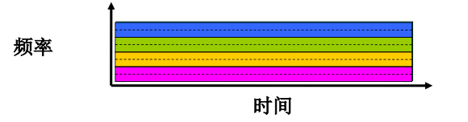
-
时分TDM：
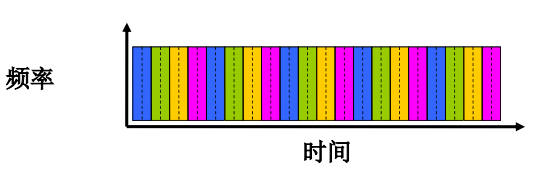
-
波分WDM
-
-
举例：电话网络
-
-
分组交换
- 特点：以分组为单位存储-转发方式；传输时使用全部带宽；在转发之前，节点必须收到整个分组（延迟、排队）；路由器缓存用完时，分组将被抛弃；统计多路复用（时分复用）
- 虚电路网络VC：
- 每个分组带虚电路标识VC ID，标签决定下一跳
- 在呼叫建立时决定路径，在整个呼叫中路径保持不变
- 路由器维持每个呼叫的状态信息
- X.25和ATM
- 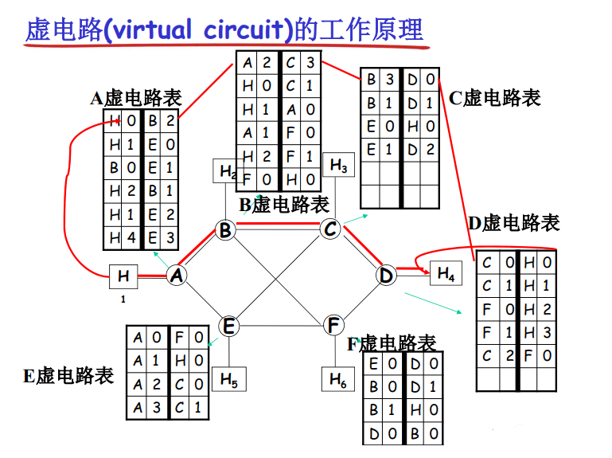
- 数据报网络Datagram
- 分组的目标地址决定下一跳
- 在不同的阶段，路由可以改变
- 在通信之前，无须建立起一个连接，有数据就能传输
- 每一个分组都有独立路由
- Internet
- 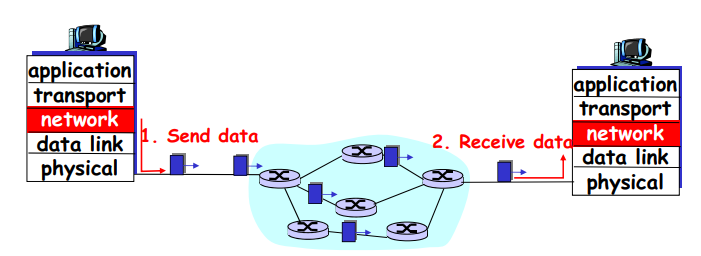
- 举例：IP网络
-
分组交换vs电路交换
- 分组交换是“突发数据的胜利者”
- 分组交换
- 缺点：
- 不适合实时服务（如电话和视频会议），因为其端到端时延是可变的和不可预测的
- 分组在目的主机需要重新进行排序
- 每个分组需要携带额外的首部信息
- 优点：
- 提供比电路交换更好的带宽共享
- 比电路交换更简单、更有效，实现成本更低
- 缺点：
四、接入网与物理媒介
将端系统连接到边缘路由器的链路或网路
1、住宅接入网络：点到点接入
- 调制解调器 modem
- 原理：将上网数据调制加载音频信号上，在电话线上传输，在局端将其中的数据解调出来：调频、调幅、调相位、综合解调
- 不能同时上网和打电话，不能总是在线
- 接入网 DSL
- 采用现存的到交换局DSLAM的电话线
- DSL线路上的数据被传到互联网
- DSL线路上的语音被传到电话网
- <2.5Mbps上行传输速率
- <24Mbps下行传输速率
- 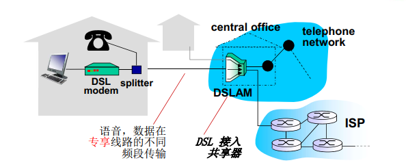
- 采用现存的到交换局DSLAM的电话线
- 线缆网络（混合光纤同轴网络HFC）
- 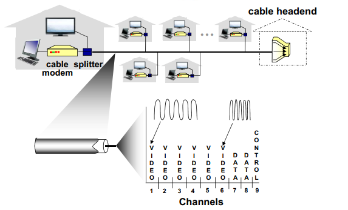
- 有线电视信号电缆双向改造
- 非对称：最高30Mbps下行传输速率，2Mbps上行传输速率
- FTTH（光纤到户）
- 主动光纤网络AON
- 被动光纤网络PON
- 家庭网络
- 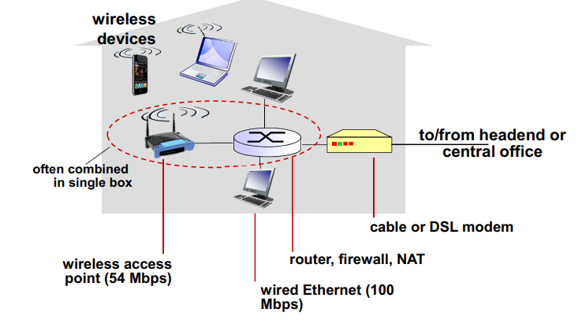
2、机构接入：LAN
- 以太网络 Ethernet
- 10Mbps，100Mpbs，1Gbps，10Gbps的传输率
- 端系统经常直接接到以太网络交换机上
- 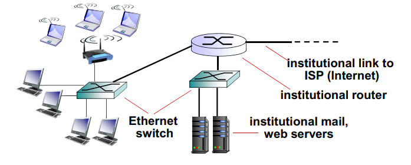
- 无线接入网络 WLAN
- 各无线端系统共享无线接入网络
- 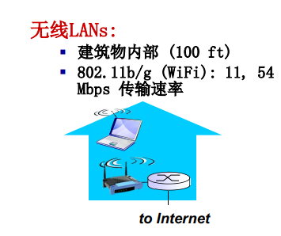
3、物理链路
在每个传输-接收对，跨越一种物理媒体
- 导向型介质：信号沿着固体媒介被导引：同轴电缆、光纤、双绞线
- 非导引型媒体：信号自由传播（如无线电）
4、常用介质
- 双绞线（TP）
- 两根绝缘铜线
- 5类：100Mbps Ethernet
- 6类：10Gbps
- 同轴电缆
- 两根同心的铜导线
- 双向
- 基带电缆：
- 电缆上一个单个信道
- Ethernet
- 宽带电缆
- 电缆上有多个信道
- HFC
- 光纤
- 光脉冲：每个脉冲表示一个比特在玻璃纤维中传输
- 高速：点到点10Gbps~100Gbps
- 低误码率：两个中继器之间可以有很长的距离，不受电磁噪声的干扰
- 安全
- 无线链路
- 开放空间传输电磁波，携带需要传输的数据
- 无需物理线缆
- 双向
- 传播环境效应：反射、吸收、干扰
五、互联网结构和ISP
1、近似层次型结构
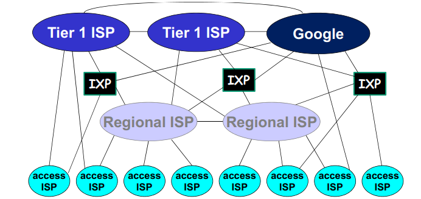
- T-1 ISP
- 中心
- 国家/国际覆盖，速率极快
- 直接与其他第一层ISP相连
- 与大量的第二层ISP和其他客户网络相连
- T-2 ISP
- 通常是区域性的ISP
- 与一个或多个第一层ISPs，也可能与其他第二层ISP相连
- Local ISP
2、ISP之间的连接
-
POP：高层ISP面向客户网络的接入点，涉及费用结算
-
对等连接：2个ISP对等互接，不涉及费用结算
-
IXP：多个对等ISP互联互通，通常不涉及费用结算
3、内容提供商网络
- 在全球部署DC
- 内容提供商网络在多处与各个ISP相联
- 内容提供商自己部署网络将全球的DC相联
- 内容提供商DC自己之间的访问，通过自己部署的专网
- 用户接入后通过用户最近的DC为之服务
六、分组交换网络中的延迟与丢失
1、延迟的原因（4个）
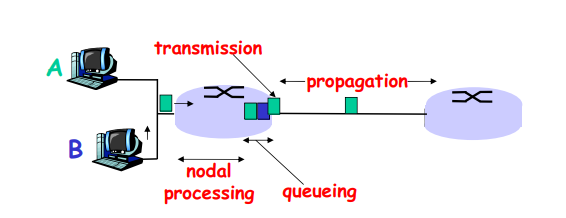
（1）处理延迟
- 检查bit级差错
- 检查分组首部和决定将分组导向何处
（2）排队延迟
- 在输出链路上等待传输的时间
- 依赖于路由器的拥塞程度
（3）传输延时
- R=链路带宽（bps）
- L=分组长度（bits）
- 将分组发送到链路上的时间=L/R
- 存储转发延迟
（4）传播延时
- d=物理链路的长度
- s=在媒体上的传播速度（~$2\times 10^8m/sec$）
- 传播延迟=d/s
节点延迟的计算：
$$
d_{nodal}=d_{proc}+d_{queue}+d_{trans}+d_{prop}
$$
- $d_{proc}$=处理延时，通常是微秒数量级或更少（固定）
- $d_{queue}$=排队延时，取决于拥塞程度（变化）
- $d_{trans}$=传输延时=L/R，对低速率的链路而言很大，通常为微秒级到毫秒级（固定）
- $d_{prop}$=传播延时，几微秒到几百毫秒（固定）
2、流量强度
- 假设：
- R=链路带宽（bps）
- L=分组长度（bits）
- a=分组到达队列的平均速率
- 流量强度=La/R
- 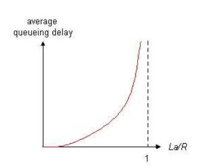
- 有以下规律：
- La/R~0：平均排队延时很小
- La/R->1：延时变得很大
- La/R>1：bit到达队列速率超过从该队列输出的呃速率，平均排队延时趋于无穷
3、丢失原因
- 链路的队列缓冲区容量有限
- 当分组到达一个满的队列时，该分组将会丢失
- 丢失的分组可能会被钱一个节点或源端系统重传或根本不重传
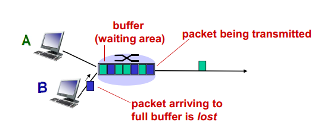
4、吞吐量
在源端和目标端之间传输的速率（数据量/单位时间）
- 瞬间吞吐量：在一个时间点的速率
- 平均吞吐量：在一个长时间内的平均值
- 瓶颈链路决定了主机之间的吞吐量
- 端到端的平均吞吐=min{$R_1$, $R_2$, … ,$R_n$}
七、协议层次与服务模型
1、分层的原因
网络比较复杂，分层实现比较容易设计，调试和实现
2、分层
将复杂网络的功能划分成功能明确的层次，上层利用下层提供的服务来实现本层的协议，从而为上层提供更复杂的功能
3、相关术语与概念
- 服务：底层实体向上层实体提供它们之间的通信的能力，通过原语来操作，垂直
- 服务用户
- 服务提供者
- 服务访问原语：上层使用下层服务的形式，高层使用低层提供的服务，以及低层向高层提供服务都是通过服务访问原语进行交互
- 服务访问点SAP：上层使用下层提供的服务通过层间接口（如端口、地址）
- 面向连接的服务：
- 连接：两个通信实体为进行通信而建立的一种结合
- 过程：建立连接，通信，拆除链接
- 例子：网络层的连接为虚电路
- 适用范围：对于大的数据块要传输，不适合小的零星报文
- 特点：报序
- 服务类型：
- 可靠的信息流：传送页面
- 可靠的字节流：远程登陆
- 不可靠的连接：数字化声音
- 无连接的服务
- 无连接服务：两个对等层实体在通信前不需要建立一个连接，不预留资源；不需要通信双方都是活跃
- 特点：不可靠、可能重复、可能失序
- IP分组，数据包
- 适用范围：适合传送零星的数据
- 服务类型：
- 不可靠的数据报：电子方式的函件
- 有确认的数据报：挂号信
- 请求回答：信息查询
- 协议：对等层实体之间在相互通信的过程中，需要遵循的规则的集合，水平
- 协议数据单元
- 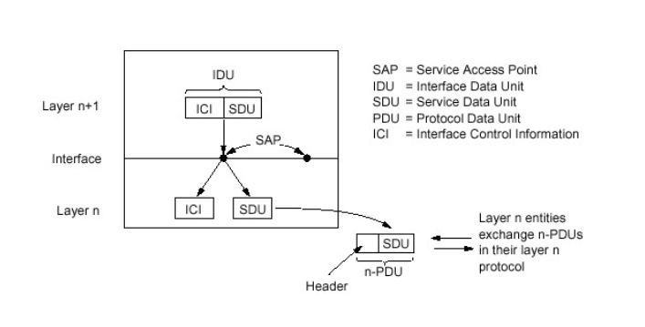
- 服务与协议的联系：
- 本层协议的实现要靠下层提供的服务来实现
- 本层实体通过协议为上层提供更高级的服务
4、互联网络分层模型及每一层的功能
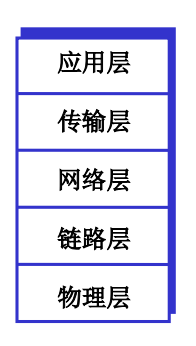
- 应用层：网络应用
- 作用：为用户或其他应用进程提供网络应用服务
- 举例：FTP，SMTP，HTTP，DNS
- 数据单元：报文Message
- 传输层：主机之间的数据传输
- 作用：在网络层提供的端到端通信基础上，细分为进程到进程，将不可靠的通信变成可靠的通信
- 举例：TCP，UDP
- 数据单元：报文段Segment
- 网络层：为数据报从源到目的选择路由
- 作用：主机-主机之间的通信，端到端的通信，不可靠
- 举例：IP，路由协议
- 数据单元：分组packet（无连接方式：数据报datagram）
- 链路层：相邻网络节点间的数据传输
- 作用：2个相邻2点的通信，点到点通信，可靠或不可靠
- 举例：点对点协议PPP，802.11（wifi），Ethernet
- 数据单元：帧Frame
- 物理层：在线路上传送bit
- 数据单元：位bit
5、封装和解封装
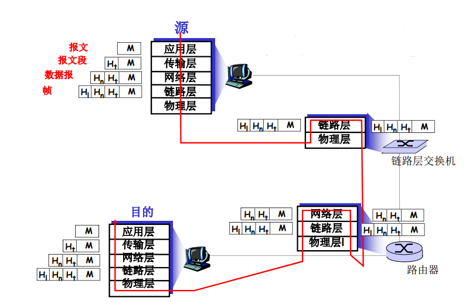
八、历史
- ARPANET：美国军方资助的分组交换实验网，由于 TCP/IP 架构的包
容性、免费使用、架构便于应用创新吸引更多的用户等原因，用户数量、
节点数量和应用数量越来越多。 - NSF 建立 ARPANET 的访问网
- 民用网络从军用网络脱开，成为现在的互联网。
- IETF（ITU， IEEE）：国际互联网工程任务组（研发因特网标准）
- RFC：Request For Comments（RFC），是一系列以编号排定的文件。文件收集了有关互联网相关信息，以及UNIX和互联网社区的软件文件
第二章 应用层
一、网络应用原理
1、应用架构
（1） 客户-服务器（C/S）体系结构
- 服务器
- 一直运行
- 固定的IP和周知的端口号
- 扩展性：服务器场
- 数据中心进行扩展
- 扩展性差
- 客户端
- 主动与服务器通信
- 与互联网有间歇性的连接
- 可能是动态IP地址
- 不直接与其他客户端通信
（2）对等体（P2P）体系结构
- 几乎没有一直运行的服务器
- 任意端系统之间可以进行通信
- 每一个节点既是客户端又是服务器
- 自扩展性
- 参与的主机间歇性连接且可以改变IP地址
- 例子：Gnutella，迅雷
（3）C/S和P2P体系结构混合体
- Napster
- 文件搜索：集中
- 主机在中心服务器上注册其资源
- 主机向中心服务器查询资源位置
- 文件传输：P2P
- 任意peer节点之间
- 文件搜索：集中
- 即时通信
- 在线监测：集中
- 当用户上线时，向中心服务器注册其IP地址
- 用户与中心服务器联系，以找到其在线好友的位置
- 两个用户之间聊天：P2P
- 在线监测：集中
2、进程通信
-
同主机：使用进程间通信机制通信（由操作系统定义）
-
不同主机：通过交换报文来通信
- 使用OS提供的通信服务
按照应用协议交换报文
3、SOCKET
- 一个整数，OS用于标识应用通信关系所采用的本地标示
- TCP：连接的本地标示，四元组（源IP，源port，目标IP，目标port），TCP服务器需要两个套接字
- 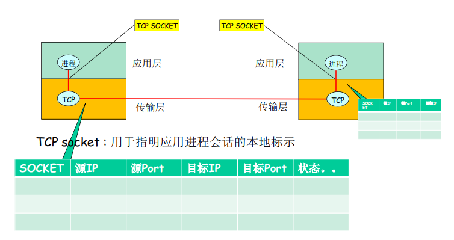
- 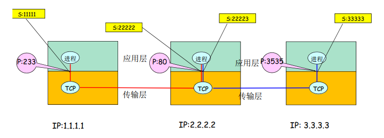
- UDP：端节点的本地标示，二元组（本IP，本port），UDP服务器需要一个套接字
- 传输报文时需要提供对方的IP和port
- 接收报文时，传输层需要上传对方的IP和port
- 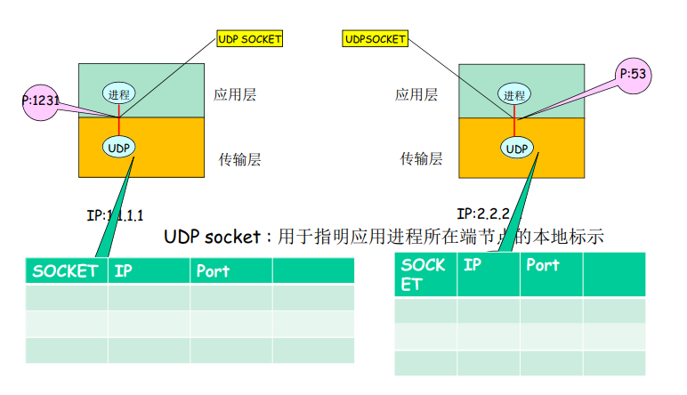
4、进程编址
IP+port
5、 应用所需要的服务需要考虑的因素
- 丢失率、可靠性
- 延迟
- 带宽
- 安全性
6、传输层协议
- TCP：提供的服务特性，可靠的字节流服务，面向连接，流量控制，拥塞控制
- UDP：提供的服务特性，无连接，不可靠的服务
- 区分不同进程
- 无需建立连接，节省时间，适合事务性的应用
- 不做可靠性的工作，适合对实时性要求比较高而对正确性要求不高的应用
- 无拥塞控制和流量控制，应用能按照设定的速度发送数据
- 都能提供进程的标示，区分不同的进程
二、WEB和HTTP
1、WEB应用包括
- HTTP协议
- HTML
- Client，Server
2、术语
- 网页：由一些对象组成
- 对象：HTML文件，JPEG文件，Java小程序，声音视频文件
- 引用URL：包括访问协议，用户名，口令字，端口等；对每个对象进行引用
3、HTTP协议
（1）作用
定义了client和server之间通信的报文格式，解释和时序 （Port 80）
（2）HTTP连接
-
持久HTTP
- 多个对象可以在一个TCP连接上传输（HTTP/1.1默认使用持久连接）
- 服务器在发送响应后，仍保持TCP连接
- 在相同客户端和服务器之间的后续请求和响应报文通过相同的连接进行传送
- 客户端在遇到一个引用对象的时候，就可以尽快发送该对象的请求
- 分类：
- 非流水方式的持久HTTP：
- 客户端只能在收到前一个响应后才能发出新的请求
- 每个引用对象花费一个RTT
- 流水方式的持久HTTP：
- HTTP/1.1的默认模式
- 客户端遇到一个引用对象就立即产生一个请求
- 所有引用对象只花费一个RTT是可能的
- 非流水方式的持久HTTP：
-
非持久HTTP
-
最多只有一个对象在TCP链接上发送
-
下载多个对象需要多个TCP连接
-
HTTP/1.0使用非持久连接
-
缺点：
- 每个对象需要2个RTT
- OS必须为每个TCP连接分配资源
- 浏览器通常打开并行TCP连接，以获取引用对象
-
举例：
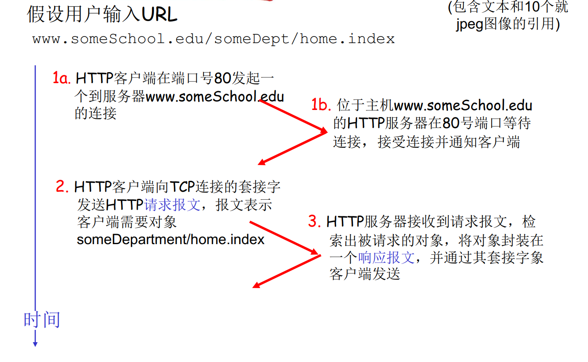
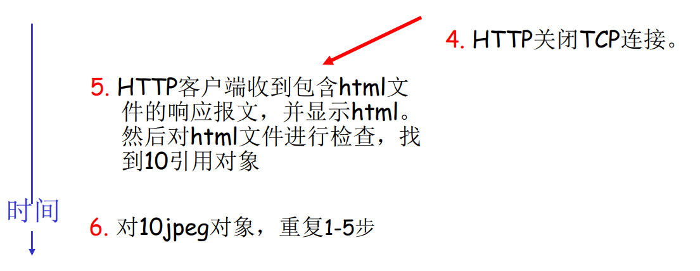
注意： 应对每一个对象重复操作
-
4、往返延迟RTT和对象的抓取时间
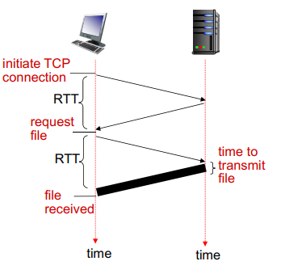
- 往返时间RTT：一个小的分组从客户端到服务器，再回到客户端的时间（传输时间忽略）
- 响应时间：
- 一个RTT用于发起TCP连接
- 一个RTT用于HTTP请求并等待HTTP响应
- 文件传输时间
- 总共：2RTT+传输时间
5、报文格式
-
请求报文
- 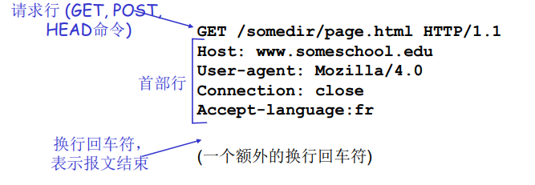
- 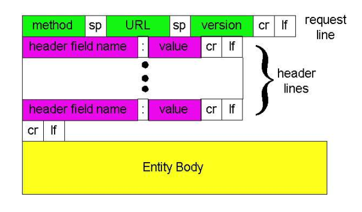
- ASCII
- 方法：
- GET：输入通过请求行的URL字段上载
- POST：提交表单输入，包含在实体主体中的输入被提交到服务器
- HEAD：要求服务器在响应报文中不包含请求对象（用于故障跟踪）
- PUT：将实体主体中的文件上载到URL字段规定的路径
- DELETE：删除URL字段规定的文件
-
响应报文
- 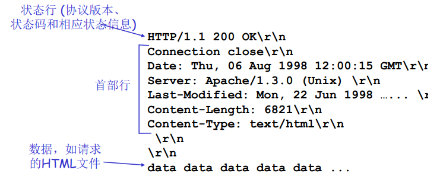
- Date：首部行指示服务器产生并发送该响应报文的日期和时间
- 响应状态码：
- 200 OK：请求成功，请求对象包含在响应报文的后续部分
- 301 Moved Permanently：
- 请求的对象已经被永久转移，新的URL再响应报文的Location：首部行中指定
- 客户端软件自动用新的URL去获取对象
- 400 Bad Request：表示该请求不能被服务器解读
- 404 Not Found：请求的文档再该服务上没有找到
- 505 HTTP Version Not Supported
- 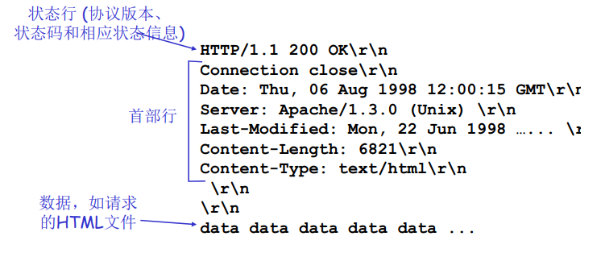
6、COOKIES
-
组成部分：
- 在HTTP响应报文中有一个cookies的首部行
- 在HTTP请求报文中由一个cookies的首部行
- 在用户端系统中保留有一个cookies文件，由用户的浏览器管理
- 在web站点有一个后端数据库
-
维护状态：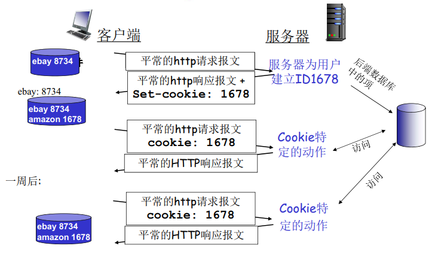
-
应用：用户验证、购物车、推荐、用户状态
7、WEB缓存
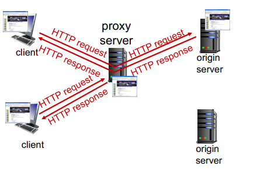
-
目的：不访问原始服务器，就满足客户的请求
-
原理
- 用户设置浏览器：通过缓存访问Web
- 浏览器将所有的HTTP请求发给缓存
- 在缓存中的对象：缓存直接返回对象
- 若对象不在缓存中，缓存请求原始服务器，然后将对象返回给客户端
-
作用：
- 通过本地命中，减少这些对象的访问延迟
- 进一步减少接入链路的流量强度，从而降低对延迟，带来的总体平均延迟减少
- 减轻服务器的负担（能减少对所有对象的时延）
- 互联网大量使用了缓存，可以使较弱的ICP也能有效提供内容
-
条件GET方法：如果缓存器中的对象拷贝是最新的，就不要发送对象
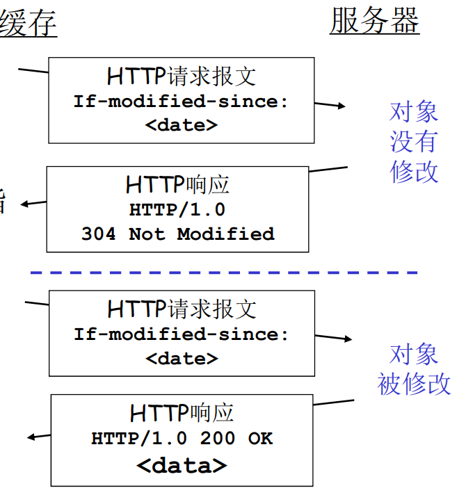
-
缓存器：在HTTP请求中指定缓存拷贝的日期
If-modified-since:<date> -
服务器：如果缓存拷贝陈旧，则响应报文没包含对象
HTTP/1.0 304 Not Modified
-
三、FTP*（不要求）
四、EMAIL
1、电子邮件应用的构成
- 用户代理
- 又名“邮件阅读器”
- 撰写、编辑和阅读邮件
- 如Outlook，Foxmail
- 输入和输出邮件保存在服务器上
- 邮件服务器
- 邮箱中管理和维护发送给用户的邮件
- 输出报文队列保持待发送邮件报文
- 邮件服务器之间的SMTP协议：发送Email报文
- SMTP
- 使用TCP在客户端和服务器之间传送报文，Port：25
- 直接传输：从发送方服务器到接收方服务器
- 传输三个阶段：
- 握手
- 传输报文
- 关闭
- 命令/响应交互
- 命令：ASCII文本
- 响应：状态码和状态信息
- 报文必须为7位ASCII码
- SMTP vs HTTP
- HTTP：拉
- SMTP：推
- 二者都是ASCII形式的命令/响应交互、状态码
- HTTP：每个对象封装在各自的响应报文中
- SMTP：多个对象包含在一个报文中
- 举例：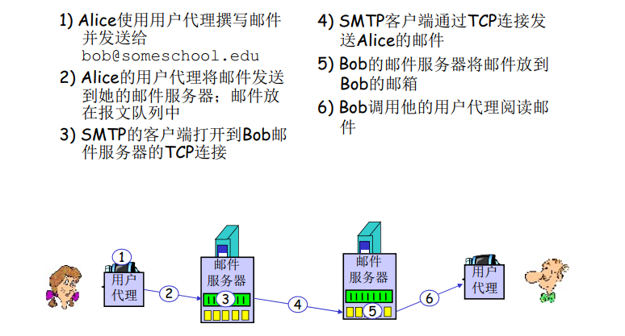
2、邮件报文格式解析
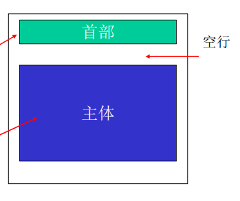
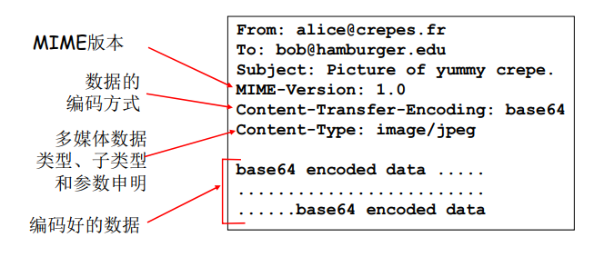
-
报文头
-
To：
-
From：
-
Subject：
与SMTP命令不同
-
-
报文体：报文，ASCII码字符
-
MIME：邮件多媒体扩展，可以在邮件中编解码多媒体内容
3、邮件存取协议
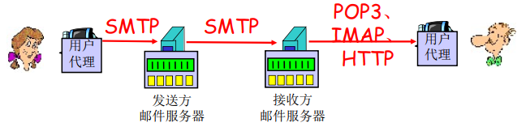
- 作用
- SMTP：传送到接收方的邮件服务器（推协议）
- 邮件访问协议：从服务器访问邮件
- 常用
- POP3：邮局访问协议，用户身份确认（代理<–>服务器）并下载
- 用户确认阶段
- 客户端命令：user（申明用户名），pass（口令）
- 服务器响应：+OK，-ERR
- 事务处理阶段，客户端：
- list：报文号列表
- retr：根据报文号检索报文
- dele：删除
- quit
- 会话中无状态
- 本地管理文件夹
- 用户确认阶段
- IMAP：Internet邮件访问协议
- IMAP服务器将每个报文与一个文件夹联系起来
- 允许用户用目录来组织报文
- 允许用户读取报文组件
- IMAP在会话过程中保留用户状态：目录名、报文ID与目录名之间的映射
- 远程管理文件夹
- HTTP：Yahoo，Hotmail等（方便）
- POP3：邮局访问协议，用户身份确认（代理<–>服务器）并下载
五、DNS
1、DNS的作用
- 完成域名到IP地址的转换（UDP Port53）
- 主机别名到规范名字的转换：Host aliasing
- 邮件服务器别名到邮件服务器的正规名字的转换：Mail server aliasing
- 负载均衡：load distribution
2、DNS的概念：分布式、层式数据库
- 命名是分层的
- 域名信息存储和服务是分布的，每个域名服务器担任一个区域的名字到IP地址的权威转换，也缓存名字-ip信息的转换
3、DNS的构成
- 解析器：本地应用（UDP）
- 域名服务器
- 权威DNS服务器
- 顶级域（TLD）服务器
- DNS协议
- 报文：查询和响应报文的报文格式相同
- 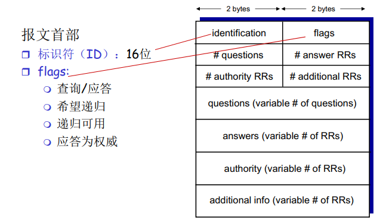
- 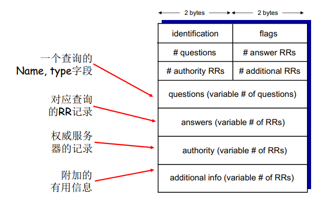
- 资源记录（RR）
- 作用：维护域名-IP地址（其他）的映射关系
- 位置：Name Server的分布式数据库
- RR的格式：（domain_name，ttl，type，class，value）
- Domain_name：域名
- Class类别：对于Internet，值为IN
- Value值：可以是数字，域名或ASCII串
- Type类别：资源记录的类型
- Type=A
- Name为主机、
- Value为IP地址
- Type=NS
- Name为域名
- Value为该域名的权威服务器的域名
- Type=CNAME
- Name为规范名字的别名
- value为规范名字
- Type=MX
- Value为name对应的邮件服务器的名字
- Type=A
- TTL：生存时间，决定了资源记录应当从缓存中删除的时间
- 报文：查询和响应报文的报文格式相同
4、域名解析的过程
解析器->本地DNS服务器->上层域名服务器->…->权威域名服务器，返回
- 递归查询
- 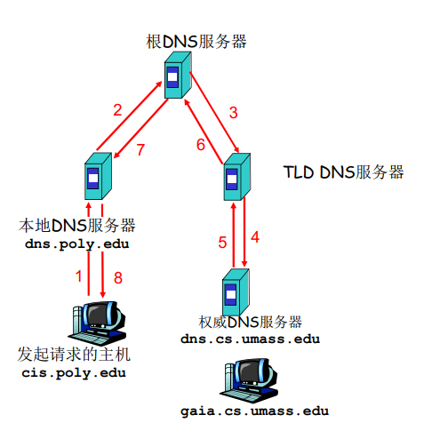
- 名字解析负担都放在当前联络的名字服务器上
- 问题：根服务器的负担太重
- 解决：迭代查询
- 迭代查询
- 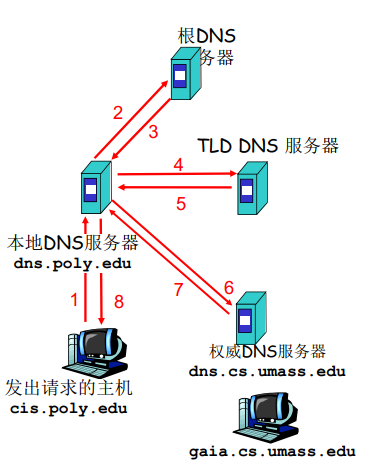
- 根（以及各级域名）服务器返回的是下一个NS的地址
- 最后由权威域名服务器给出解析结果
- 当前联络的服务器给出可联系的服务器的名字
5、DNS缓存
- 作用：提高效率，使得根服务器不用经常被访问
- 问题：若情况变化，缓存结果可能和权威资源记录不一致
- 解决方法：TTL（默认2天）
- 本地缓存+服务器缓存
6、新增一个域
- 在上级域的名字服务器中增加两条记录，指向这个新增的子域的域名 和 域名服务器的地址
- 在新增子域 的名字服务器上运行名字服务器，负责本域的名字解析： 名字->IP地址
- 举例：
7、攻击DNS
- DDoS攻击
- 对根服务器进行流量轰炸攻击：发送大量ping
- 没有成功
- 根目录服务器配置了流量过滤器，防火墙
- Local DNS服务器缓存了TLD服务器的IP地址，因此无需查询根服务器
- 向TLD服务器流量轰炸攻击：发送大量查询
- 可能更危险
- 效果一般，大部分DNS缓存了TLD
- 对根服务器进行流量轰炸攻击：发送大量ping
- 重定向攻击
- 中间人攻击
- 截获查询，伪造回答，从而攻击某个站点
- DNS中毒
- 发送伪造的应答给DNS服务器，希望它能缓存该虚假结果
- 技术上较困难：分布式截获和伪造
- 中间人攻击
- 利用DNS基础设施进行DDoS
- 伪造某个IP进行查询，攻击这个目标IP
- 查询放大，响应报文比查询报文大
- 效果有限
六、P2P
1、P2P概念：每个对等体既是客户端又是服务器
-
P2P网络是这些peer构成的应用层面上的逻辑网络
-
P2P网络比C/S分发内容快的原因：这些peer节点参与到内容的上载，流量和服务都是分布的，可扩展性
-
分发时间$D$
-
假设：
- $u_s$表示服务器接入链路的上载速率，$u_i$表示第$i$对等方接入链路的上载速率，$d_i$表示第$i$对等方接入链路的下载速率。$F$表示被分发的文件长度，$N$表示要获得该文件副本的对等方数量
-
服务器向$N$个对等方传输该文件的一个副本，分发时间$D_{cs}=NF/u_s$。对于P2P架构网络，服务器至少在其接入链路上发送文件一次，故最小分发时间至少为$F/u_s$
-
令$d_{min}$表示具有最小下载速率的对等方的下载速率，则最小分发时间至少为$F/d_{min}$
-
系统整体的总上载能力等于服务器的上载速率加上每个单独的对等方的上载速率，即$u_{total}=u_s+u_1+…+u_N$，则最小分发时间至少为$NF/(u_s+u_1+…+u_N)$
-
对于C/S体系网络，$D_{cs}=max{\frac{NF}{u_s},\frac{F}{d_{min}}}$
对于P2P体系网络，$D_{P2P}=max{\frac{F}{u_s},\frac{F}{d_{min}},\frac{NF}{u_s+\sum\limits^N_{i=1}u_i}}$
-
-
应用：文件分发、流媒体、VoIP
2、典型P2P应用及其原理
- Napster
- Gnutella
- KaZaA
- BT
- DHT
七、视频流化服务和CDN
1、服务器向客户端进行视频流化的方式
- UDP流化
- http流化
- DASH
2、DASH流化过程
- 服务器
- 将视频文件分割成多个块
- 每个块独立存储，编码于不同码率
- 告示文件：提供不同块的URL
- 客户端
- 先获取告示文件
- 周期性测量服务器到客户端的带宽
- 查询告示文件，在一个时刻请求一个块，HTTP头部指定字节范围
- 若带宽足够，选择最大码率的视频块
- 会话中的不同时刻，可以切换请求不同的编码块
- 智能客户端
- 什么时候去请求块 (不至于缓存挨饿，或者溢出)
- 请求什么编码速率的视频块 (当带宽够用时，请求高质量的视频块)
- 哪里去请求块 (可以向离自己近的服务器发送URL，或者向高可用带宽的服务器请求)
3、CDN
-
单个服务器，或者服务器群向客户端提供海量内容并发服务的问题：扩展性差
-
CDN的原理
- 应用层面的协作服务网络
- 在全网部署缓存节点，内容预先部署到CDN缓存节点上
- 用户请求通过域名解析重定向向离自己最近的节点请求内容
-
缓存节点放置的方式
- Enter Deep
- Bring Home
-
举例：
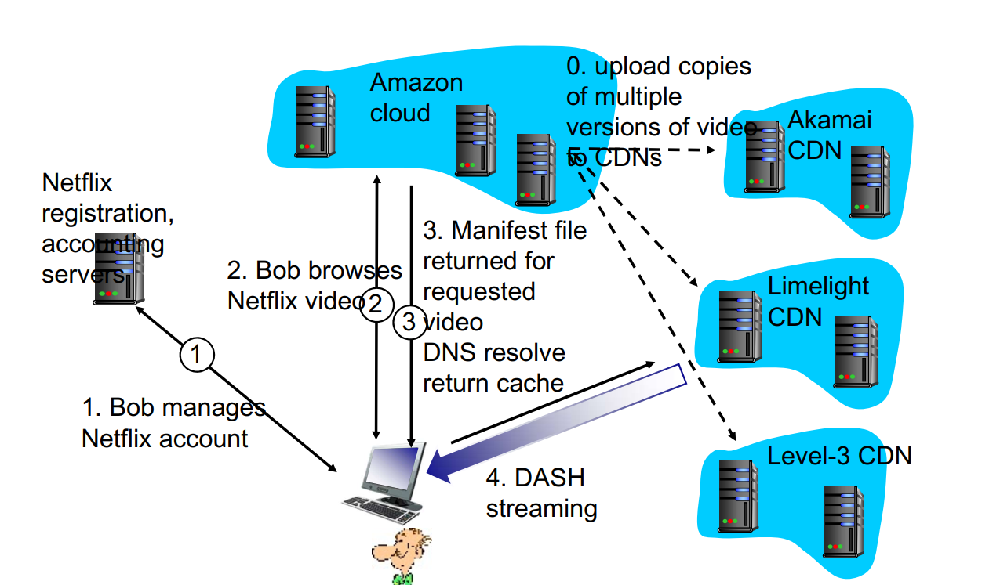
八、TCP的SOCKET编程
1、SOCKET的概念
TCP连接的本地标示，向这个SOCKET写就是发送给对方的进程；从SOCKET中读，就是读取对方发送过来的数据
2、SOCKET API
- 创建
- 使用（读和写）
- 关闭
3、TCP SOCKET数据传输的特点
- 面向连接
- 可靠的字节流服务
4、TCP SOCKET编程
服务器首先运行，等待连接建立
- 服务器进程必须先处于运行状态
- 创建欢迎socket
- 和本地端口捆绑
- 在欢迎socket上阻塞式等待接收用户的连接
客户端主动和服务器建立连接
-
创建客户端本地套接字（隐式捆绑到本地port）
- 指定服务器进程的IP地址和端口号，与服务器进程连接
-
当有与客户端连接的请求到来时
- 服务器接受来自用户端的请求，接触阻塞式等待，返回一个新的socket（与欢迎socket不同），与客户端通信
- 允许服务器与多个客户端通信
- 使用源IP和源端口来区分不同的客户端
- 服务器接受来自用户端的请求，接触阻塞式等待，返回一个新的socket（与欢迎socket不同），与客户端通信
-
连接API调用有效时，客户端与服务器建立了TCP连接
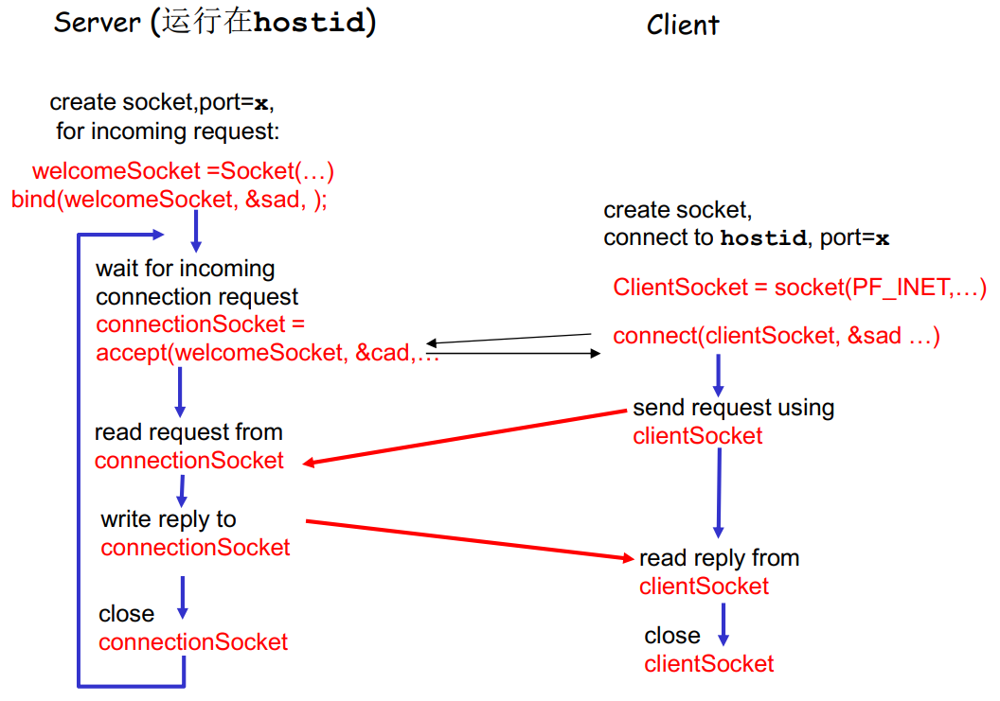
5、面向连接的套接字通信工作流程
- 服务器先用socket函数来建立一个套接字，用这个套接字完成通信的监听
- 用bind函数来绑定一个端口号和IP地址。因为本地计算机可能有多个IP，每一个IP有多个端口号，需要指定一个IP和端口进行监听
- 服务器调用listen函数，使服务器的这个端口和IP出于监听状态，等待客户机的连接
- 客户端用socket建立一个套接字
- 客户端调用connect函数，通过远程IP和端口号连接远程计算机指定的端口
- 服务器用accept函数来接收远程计算机的连接，建立起与客户端之间的通信
- 建立连接以后，客户端用write函数向socket中写入数据。也可用read函数读取服务器发送来的数据
- 服务器用read函数读取客户端发送来的数据，也可用write函数发送数据
- 完成通信以后，用close函数关闭socket连接
九、UDP SOCKET编程
1、UDP SOCKET数据传输的特点
- 没有握手
- 发送端在每一个报文中明确的指定目标的IP地址和端口号
- 服务器必须从收到的分组中提取出发送端的IP地址和端口号
2、UDP SOCKET 编程
-
建立SOCKET
-
使用
-
关闭
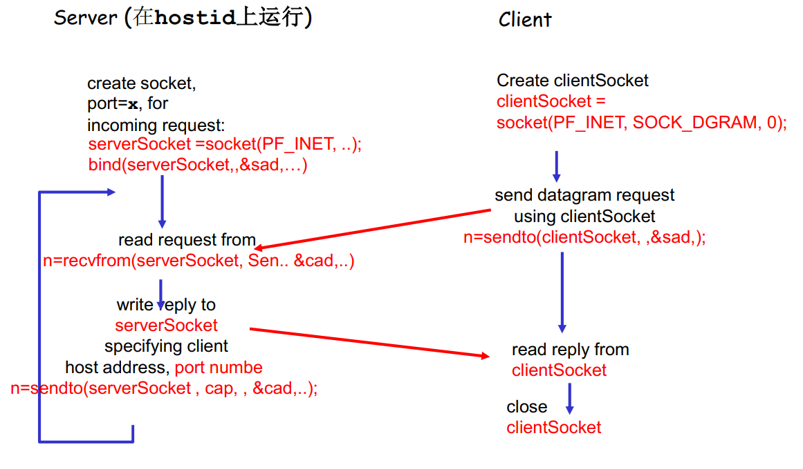
第三章 传输层
一、传输层服务
1、传输服务
为运行在不同主机上的应用进程提供逻辑通信
2、传输协议
运行于端系统的两个对等传输层实体相互通信应该遵守的规则集合
- 发送方：将应用层的报文分成报文段，然后传递给网络层
- 接收方：将报文段重组成报文，然后传递给应用层
3、传输服务与网络服务的区别
- 网络服务：主机-主机之间的逻辑通信
- 传输服务：进程-进程之间的逻辑通信
- 依赖于网络层服务（延时，带宽）
- 对网络层服务进行增强（数据丢失、顺序混乱、加密）
4、互联网络传输层协议
- TCP：有连接，可靠保序数传服务
- 多路复用、解复用
- 拥塞控制
- 流量控制
- 建立连接
- UDP：不可靠、不保序的传输
- 多路复用、解复用
- 没有为尽力而为的IP服务添加更多的其他额外服务
二、复用与解复用
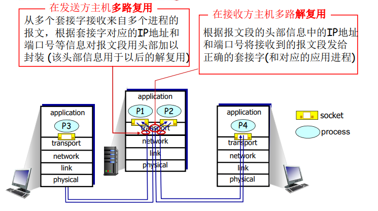
1、复用
源端多个上层应用收集数据：应用报文，封装报文
2、解复用
接收端将数据按照端口号（结合IP地址）给相应的SOCKET对应的应用
3、复用和解复用的工作原理：IP PORT
- TCP有连接情况：SOCKETS为4元组（源IP，源port，目的IP，目的port）
- 两个具有不同源IP地址或源端口号的到达TCP报文段将被定向到两个不同的套接字，除非TCP报文段携带了初始创建连接的请求
- UDP无连接情况：SOCKETS为2元组（目的IP，目的port）
- 两个具有不同源IP或源端口号的到达UDP报文段，但具有相同的目的IP地址和目的端口地址，则两个报文段将通过相同的目的套接字被定向到相同的目的进程
三、无连接传输协议UDP
1、必要性
- 对实时性比较在乎，对可靠性要求不高
- 简单：在发送端和接收端没有连接状态
- 报文段头部开销很小（TCP：20字节；UDP：8字节）
- 无拥塞控制和流量控制，UDP可以尽可能快的发送报文段
2、UDP报文（数据报）格式
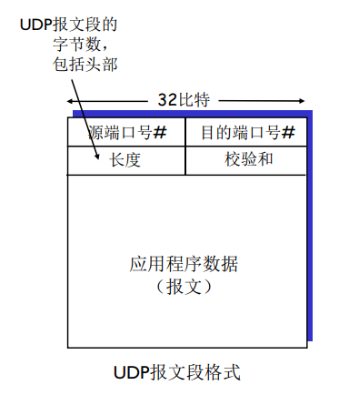
- UDP校验和
- 目的：检测在被传输报文段中的差错
- 发送方：
- 将报文段的内容视为16比特的整数
- 校验和：报文段的加法和（1的补运算）
- 发送方将校验和放在UDP的校验和字段
- 接收方：
- 计算接收到的报文段的校验和
- 检查计算出的校验和与校验和字段的内容是否相等
- 不相等——检测到差错
- 相等——可能有残存错误
- Internet校验和的例子：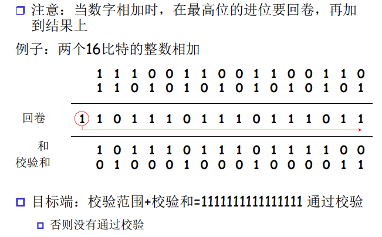
四、可靠数据传输的原理
1、Rdt服务
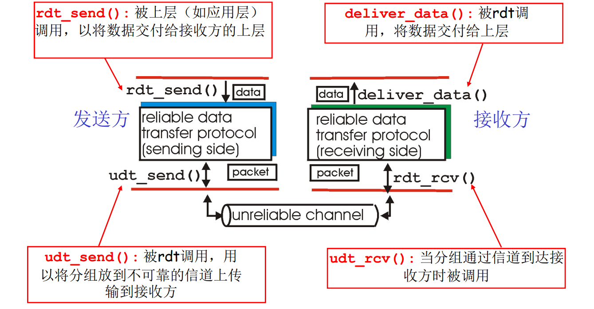
（1）Rdt1.0：在可靠信道上的可靠数据传输
- 下层的信道是完全可靠的
- 没有比特出错
- 没有分组丢失
- 发送方和接收方的FSM
- 发送方将数据发送到下层信道
- 接收方从下层信道接收数据
- 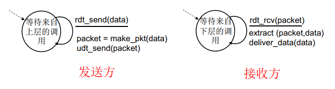
（2） Rdt2.0：具有比特差错的信道
- 下层信道可能会出错：将分组中的比特翻转
- 用校验和来检测比特差错
- 从差错中恢复：
- 确认（ACK）：接收方显式地告诉发送方分组已经被正确接收
- 否定确认（NAK）：接收方显式地告诉发送方分组发生了差错，发送方收到NAK后，发送方重传分组
- 新机制：采用差错控制编码进行差错检测
- 发送方差错控制编码、缓存
- 接收方使用编码检错
- 接收方的反馈：控制报文（ACK,NAK）
- 发送方收到反馈相应的动作
- FSM描述：
- 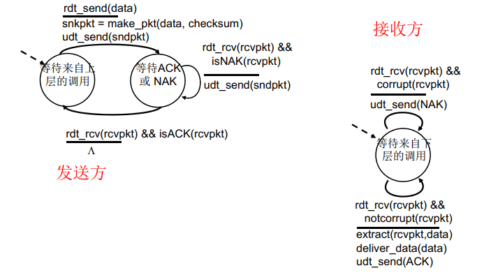
（3）Rdt2.1：处理Rdt2.0的缺陷
- 引入序号
- 处理重复：
- 发送方在每个分组中加入序号
- 若ACK/NAK出错，发送方重传当前分组
- 接收方丢弃重复分组
- 发送方处理出错的ACK/NAK
- 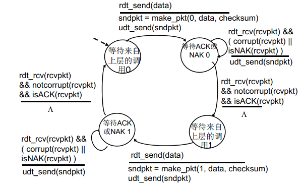
- 接收方处理出错的ACK/NAK
- 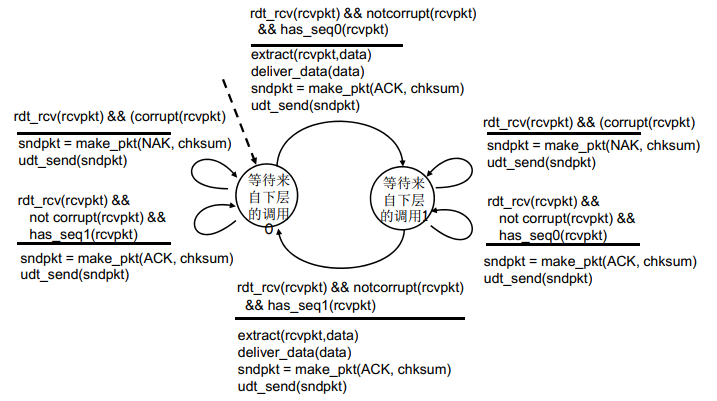
- 讨论：
- 发送方：
- 在分组中加入序列号（两个（0，1）即可，一次只发送一个未经确认的分组）（区分到达的数据包是重传的还是新数据，也可以用来判断数据包顺序是否正确）
- 必须检测ACK/NAK是否出错（需要EDC）
- 状态数变成了两倍
- 接收方：
- 必须检测接收到的分组是否是重复的
- 状态会指示希望接收到的房租的序号为0还是1
- 接收方不知道它最后发送的ACK/NAK是否被正确地收到
- 发送方不对收到地ACK/NAK给确认
- 接收方发送ACK，若接收方收到：
- 下一个分组——则ACK被正确收到
- 老分组——则ACK没有被正确地传到发送方
- 必须检测接收到的分组是否是重复的
- 发送方：
- rdt2.1的运行
- 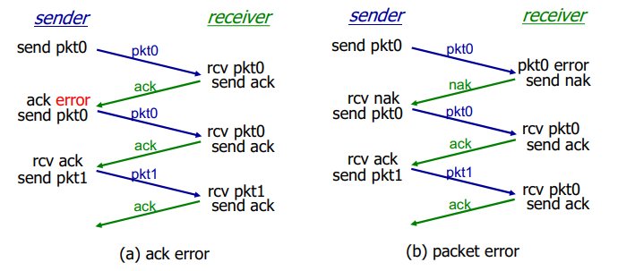
（4）Rdt2.2：无NAK的协议
- 特点：
- 功能同rdt2.1，但只使用ACK
- 接收方对最后正确接收的分组发ACK,以代替NAK
- 接收方必须显式地包含被正确接收分组地序号
- 当收到重复的ACK时，重传当前分组
- rdt2.2的运行
- 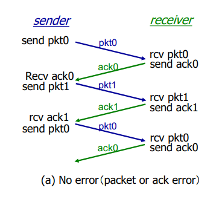
- 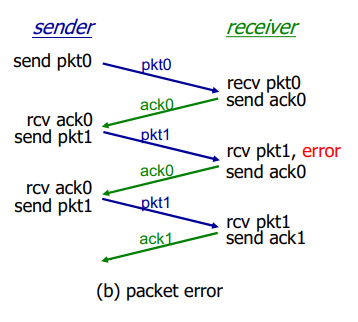
- FSM描述
（5）rdt3.0：具有比特差错和分组丢失的信道
- 方法：发送方等待ACK一段合理的时间
- 发送端超时重传：若时间到未收到ACK—>重传
- 需要一个倒计时定时器（防止丢包现象）
- FSM描述
- rdt3.0的运行：
- rdt3.0的性能
- 在链路容量较大情况下性能很差
- rdt3.0的停-等操作
- 流水线：提高链路利用率
2、技术机制
- 校验和，正向确认，反向确认
- 序号：检查重复
- 只有正向确认的机制
- 检错重发和超时重发：处理丢失
- 滑动窗口
3、利用率计算
（1）停止等待技术
链路带宽延迟积（容量）效率低
（2）管道技术
在未经对方确认的情况下，可以连续发送多个PDU
-
通用：滑动窗口（slide window）协议
-
发送缓冲区
- 形式：内存中的一个区域，落入缓冲区的分组可以发送
- 功能：用于存放已发送，但是没有得到确认的分组
- 必要性：需要重发时可用
-
发送窗口的移动——前沿移动
- 发送窗口前沿移动的极限：不能超过发送缓冲区
-
发送窗口的移动——后沿移动
- 条件：收到老分组的确认
- 结果：发送缓冲区罩住新的分组，来了分组可以发送
- 移动的极限：不能够超过前沿
-
发送窗口
- 前沿移动：有新的分组落入发送缓冲区范围，发送
- 后沿移动：来了老的低序号分组的确认，后沿向前滑动，新的分组可以落入发送缓冲区的范围
-
接收窗口
-
接收窗口=接收缓冲区
- 只有收到的分组序号落入接收窗口内才允许接收
- 若序号在接收窗口之外，则丢弃
-
接收窗口尺寸Wr=1，只能顺序接收
接收窗口尺寸Wr>1，则可以乱序接受
-
接收窗口的滑动与发送确认
- 滑动：低序号的分组要来，接收窗口移动；高序号分组乱序到，缓存但不交付（rdt不允许失序），不滑动
- 发送确认：
- 接收窗口尺寸=1：发送连续收到的最大的分组确认（累计确认）
- 接收窗口尺寸>1：收到分组，发送哪个分组的确认（非累计确认）
-
-
-
Go-back-N（GBN）协议
-
特点：发送窗口大于1，接收窗口=1（只能顺序接收；发送方设置一个超时定时器，一旦出错，返回到出错的哪一个PDU重发）
-
发送方：
- 分组头部有k比特的序列号，一次发送多个分组
- 窗口大小为N，发送缓冲区：允许未确认的连续多个分组
- ACK(n)：发送端收到确认n，即序号为n之前的所有分组进行确认（累计确认）
- 只对后沿分组设定时器
- timeout(n)：重传发送窗口中所有序号大于等于n的分组
- 超时只有可能是最老的分组
- 扩展的FSM：
-
接收方：
- 只发送ACK：对顺序接收的最高序号的分组
- 可能会产生重复的ACK
- 接收窗口=1
- 对乱序的分组：
- 丢弃
- 对顺序接收的最高序号的分组进行确认（累计确认）
- 只发送ACK：对顺序接收的最高序号的分组
-
运行实例：
-
-
选择重传（SR）
- 特点：发送窗口大于1，接收窗口大于1（能够乱序接收；发送方为每个发送出去的PDU；设置超时定时器，哪个超时重发哪个）
- 发送方：
- 从上层接收数据：如果下一个可用与该分组的序号可在发送窗口中，则发送
- timeout(n)：重新发送分组n，重新设定定时器
- ACK(n) in [sendbase, sendbase+N]：将分组n标记为已接收，如果n为最小为确认分组序号，将base移到下一个未确认序号
- 接收方：
- 分组n [rcvbase, rcvbase+N-1]
- 发送ACK(n)
- 乱序：缓存
- 顺序正确：该分组及以前缓存的序号连续的分组交付给上层，然后将窗口移到下一个仍未被接收的分组
- 分组n [rcvbase-N, rcvbase-1]
- ACK(n)
- 其他：
- 忽略该分组
- 分组n [rcvbase, rcvbase+N-1]
- SR的运行
-
窗口的最大尺寸（n为序号空间大小，例如：n=2，序列号：0、1、2、3）
- GBN：$2^n-1$
- SR：$2^{n-1}$
五、有连接的传输层协议：TCP
1、TCP服务特性
- 点对点：一个发送方，一个接收方
- 可靠的、按顺序的字节流：没有报文边界
- 管道化（流水线）：TCP拥塞控制和流量控制设置窗口大小
- 发送和接收缓存
- 全双工数据
- 在同一连接中数据流双向流动
- MSS：最大报文段大小
- 面向连接：在数据交换之前，通过握手（交换控制报文）初始化发送方、接收方的状态变量
- 有流量控制：发送方不会淹没接收方
2、TCP段结构
- 序号：报文段首字节的在字节流的编号（偏移量）32bits
- 确认号（对顺序收到的最后一个字节+1）32bits：
- 期望从另一方收到的下一个字节的序号
- 累计确认
- 接收窗口：指示接收方愿意接受的字节数量，用于流量控制 16bits
- 标志字段：
- RST、SYN、FIN用于连接建立和拆除
- PSH被置位时，指示接收方立即将数据交给上层
- URG比特用于指示报文段里存在着被发送端的上层实体置为“紧急”的数据。紧急数据的最后一个字节由16bits的紧急数据指针字段指出
3、RTT时间估计和重发超时时间估计
- 设置TCP的超时：
- 比RTT长
- 太短：太早超时，造成不必要的重发
- 太长：对报文段丢失的反应太慢，消极
- 估计RTT：
- SampleRTT：测量从报文段发出到确认的时间（若有重传，忽略此次测量）
- 移动平均计算：对几个最近测量值求平均值
- 指数加权移动平均：$EstimatedRTT=(1-\alpha)EstimatedRTT+\alphaSampleRTT$
- 过去样本的影响呈指数衰减
- 推荐值：$\alpha=0.125$
- 设置超时：
- EstimatedRTT+安全边界时间
- 当前SampleRTT与EstimatedRTT的偏差：$DevRTT=(1-\beta)DevRTT+\beta|SampleRTT-EstimatedRTT|$（推荐值$\beta=0.25$）
- 超时时间间隔：$TimeoutInterval=EstimatedRTT+4*DevRTT$
4、TCP的可靠数据传输原理
-
TCP在IP不可靠服务的基础上建立了rdt
- 管道化的报文段
- GBN or SR
- 累计确认（像GBN）
- 单个单传定时器（像GBN）
- 是否可以接受乱序，没有规范
- 管道化的报文段
-
通过以下时间触发重传
-
超时（只重发最老的一个段：SR）
-
重复的确认
-
-
快速重传：在没有超时的情况下，收到对方对于某一个段的重复三次（一共4个）ACK
- 超时周期往往太长：在重传丢失报文段之前的延时太长
- 通过重复的ACK来检测报文段丢失
- 发送方通常连续发送大量的报文段
- 如果报文段丢失，通常会引起多个重复的ACK
- 如果发送方收到同一数据的三个冗余ACK，重传最小序号的段
- 在定时器过时之前重发报文段
- 它假设跟在被确认的数据后面的数据丢失了
- 第一个ACK正常
- 收到第二个该段的ACK，表示接收端收到一个该段后的乱序段
- 收到第3、4个该段的ACK，表示接收方收到该段之后的2、3个乱序段，段丢失的可能性非常大
5、流量控制
-
目的：防止淹没接收方
-
方法：将接收窗口大小捎带方式传递给发送端
-
接收方在其向发送方的TCP段头部的rwnd字段通告其空闲buffer大小
- RcvBuffer大小通过socket选项设置（典型默认大小为4096字节）
- 很多操作系统自动调整RcvBuffer
-
发送方限制未确认字节个数$\leq$接收方发送过来的rwnd值
-
缓存中可用的空间
=RcvWindow
=RcvBuffer-[LastByteRcvd-LastByteRead]
-
6、连接管理
-
连接建立：3次握手技术，对双方选择的初始序号给予确认，准备好缓冲区
- 过程：
- 第一次握手：SYN=1，ACK=0；发起段序号
- 第二次握手：SYN=1，ACK=1；被呼叫方序号
- 第三次握手：SYN=0，ACK=1
- 三次握手FSM
- 过程：
-
连接拆除：对称
- 客户端，服务器分别关闭自己一侧的连接
- 发送FIN bit=1的TCP段
- 一旦接收到FIN，用ACK回应
- 接到FIN段，ACK可以和它自己发出的FIN段一起发送
- 可以处理同时的FIN交换
- 客户端，服务器分别关闭自己一侧的连接
六、拥塞控制原理
1、拥塞的概念及原因
-
拥塞：太多的数据需要网络传输，超过了网络的处理能力
-
拥塞的表现：
- 分组丢失（路由器缓冲区溢出）
- 分组经历比较长的延迟（在路由器的队列中排队）
-
拥塞的原因：
-
场景1
- 假定：
- 两个发送端，两个接收端
- 一个路由器，无限大缓冲
- 输出链路带宽：R
- 没有重传
- 假定：
-
场景2
- 假定：
- 一个路由器，有限的缓冲
- 分组丢失时，发送端重传
- 应用层的输入=应用层的输出：$\lambda_{in}=\lambda_{out}$
- 传输层的输入包括重传：$\lambda^*{in}\geq \lambda{in}$
- 理想化：发送端有完美的信息
- 发送端知道什么时候路由器的缓冲可用
- 只在缓冲可用时发送
- 不会丢失：$\lambda^*{in}=\lambda{in}$
- 发送端知道什么时候路由器的缓冲可用
- 理想化：掌握丢失信息
- 分组可以丢失，在路由器由于缓冲器满而被丢弃
- 若知道分组丢失了，发送方重传分组
- 现实情况：重复
- 分组可能丢失，由于缓冲器满而被丢弃
- 发送端最终超时，发送第2个拷贝，2个分组都被传出
- 拥塞的代价：
- 为达到一个有效输出，网络需要做更多的工作（重传）
- 没有必要的重传，链路中包括多个分组的拷贝
- 假定：
-
场景3
-
假定：
- 4个发送端
- 多重路径
- 超时/重传
-
拥塞的代价
-
当分组丢失时，任何“关于这个分组的上游传输能力”被浪费
-
-
-
2、拥塞控制的手段
- 端到端的拥塞控制
- 没有来自网络的显式反馈
- 端系统根据延迟和丢失事件推断是否有拥塞
- TCP采用这种方法
- 网络辅助的拥塞控制
- 路由器提供给端系统以反馈信息
- 单个bit置位，显示有拥塞
- 显式提供发送端可以采用的速率
- 路由器提供给端系统以反馈信息
七、TCP的拥塞控制原理
1、TCP拥塞控制原理
-
检测拥塞
- 某个段超时了（事件丢失）：拥塞
- 原因1：网络拥塞（某个路由器缓冲区没空间了，被丢弃）——概率大
- 原因2：出错被丢弃（未通过校验，被丢弃）——概率小
- 有关某个段的3次重复ACK：轻微拥塞
- 某个段超时了（事件丢失）：拥塞
-
速率控制方法
-
维持一个拥塞窗口的值：CongWin
-
发送端限制已发送但是未确认的数据量（的上限）：
LastByteSent-LastByteAcked$\leq$ CongWin
-
粗略控制网络速率：
$$
rate\approx\frac{CongWin}{RTT}byte/sec
$$ -
CongWin是动态的，是感知到网络拥塞程度的函数：
- 超时或者3个重复ack，CongWin↓
- CongWin降为1MSS，进入SS阶段后再倍增到CongWin/2（每个RTT），从而进入CA阶段
- CongWin降为CongWin/2（3个重复ACK），CA阶段
- 正常收到ACK：
- SS阶段：加倍增加
- CA阶段：线性增加
- 超时或者3个重复ack，CongWin↓
-
-
拥塞控制机制：
-
慢启动
- 连接刚建立时，CongWin=1MSS
- 当连接开始时，指数性增加发送速率直到丢失事件发生
- 每一个RTT，CongWin加倍
- 每收到一个ACK时，CongWin加一
- 慢启动阶段：只要不超时或3个重复ACK，一个RTT，CongWin加倍
- 总结：初始速率很慢，但指数级加速，SS时间很短，长期可以忽略
-
AIMD
- 乘性减：丢失事件后将CongWin降为1，将CongWin/2作为阈值，进入慢启动阶段（倍增至CongWin/2）
- 加性增：当CongWin>阈值时，一个RTT如果没有发生丢失事件，将CongWin加1MSS
- 当收到3个重复的ACKs（丢失）：
- CongWin减半
- 窗口（缓冲区大小）之后线性增长
- 当超时事件发生时：
- CongWIn被设置成1MSS，进入SS阶段
- 窗口指数增长
- 增长到一个阈值（上次发生拥塞的窗口的一半）时，再线性增加
-
总结（Reno方法）：
-
当CongWin<Threshold，发送端处于慢启动阶段（slow-start），窗口指数型增长
-
当CongWIn>Threshold，发送端处于拥塞避免阶段（congestion-avoidance），窗口线性增长
-
当收到三个重复的ACKs，Threshold设置成CongWin/2，CongWin=Threshold
-
当超时事件发生时（timeout），Threshold=CongWin/2，CongWin=1MSS，进入SS阶段
-
-
举例：
注意： 重复ACK过程中，CongWin和Threshold不变，收到三个重复ACK后，Threshold=CongWin/2，CongWin=Threshold+3MSS
-
2、TCP拥塞控制算法
- Tahoe：超时事件和3个冗余ACK处理一样（无快速恢复）
- 无条件将CongWin减至1
- Reno：超时事件和3个冗余ACK处理不一样
- 超时事件（丢包）：Threshold=CongWin/2，CongWin=1MSS，进入SS阶段
- 3个冗余ACK：快速重传，Threshold设置成CongWin/2，CongWin=Threshold
3、TCP的吞吐量
-
设W为发生丢失事件时的窗口尺寸，则平均吞吐量：
$$
一条连接的平均吞吐量=\frac{0.75W}{RTT}
$$ -
设L为丢包率，则平均吞吐量：
$$
一条连接的平均吞吐量=\frac{1.22\times MSS}{RTT\sqrt{L}}
$$
4、TCP的公平性
- 公平性目标：如果K个TCP会话分享一个链路带宽为R的瓶颈，每一个会话的有效带宽为R/K
- TCP公平的原因：
- 对于两个竞争的TCP会话：
- 加性增加，斜率为1，吞吐量增加
- 乘性减，吞吐量比例减少
- 对于两个竞争的TCP会话：
第四章 网络层：数据平面
一、简介
1、网络层的主要服务和功能
- 网络层服务
- 在发送主机和接受主机之间传送段
- 在发送端将段封装到数据报中
- 在接收端，将段上交给传输层实体
- 网络层协议存在于每一个主机和路由器
- 路由器检查每一个经过它的IP数据报的头部
- 网络层功能
- 转发：将分组从路由器的输入接口转发到合适的输出接口
- 路由：使用路由算法来决定分组从发送主机到目标接收主机的路径
- 路由选择算法
- 路由选择协议
2、实现网络层功能的方式：
- 传统方式
- 控制平面和数据平面的功能垂直集成在每个设备上（路由器）
- 控制平面功能：路由协议实体分布式地计算路由表
- 本地，每个路由器的功能
- 决定从路由器输入端口到达的分组如何转发到输出端口
- 转发功能
- 数据平面：IP协议按照路由表进行分组的转发
- 全网范围内的逻辑
- 决定数据报如何在路由器之间路由，决定数据报从源到目标主机之间地端到端路径
- SDN通用转发方式
- 控制平面和数据平面分离，在不同设备上实现
- SDN控制器集中式计算、下发流表实现控制平面地功能
- SDN分组交换机按照流表对到来的分组进行转发，实现数据平面的功能
3、网络层提供服务的一些重要指标
- 带宽
- 延迟，延迟差
- 丢包与否，丢包率
二、路由器结构和工作原理
1、路由器的2大功能
- 路由协议：运行路由选择算法/协议（RIP，OSPF，BGP）——生成路由表
- 转发分组：从输入到输出链路交换数据报——根据路由表进行分组的转发
2、构成
-
输入端口：线路终端实现物理层功能、链路协议实体实现链路层功能，网络层功能实现分布式分组转发
- 基于目标的转发：仅仅依赖于IP数据报的目标IP地址
- 最长前缀匹配：当给定目标地址查找转发表时，采用最长地址前缀的目标地址表项
- 对于N个输入端口：交换机构的交换速度是输入线路速度的N倍比较理想，才不会成为瓶颈
-
交换结构
-
通过内存交换
- 在CPU直接控制下的交换，采用传统的计算机
- 分组被拷贝到系统内存，CPU从分组的头部提取出目标地址，查找转发表，找到对应的输出端口，拷贝到输出端口
- 转发速率被内存的带宽限制
- 一次只能转发一个分组
-
通过总线交换
- 数据报通过共享总线，从输入端口转发到输出端口
- 总线竞争：交换速度受限于总线带宽
- 1次处理一个分组
- 对于接入或企业级路由器，速度足够，但不适合区域或骨干网络
-
通过互联网络的交换
- 同时并发转发多个分组，克服总线带宽限制
- Banyan（榕树）网络，crossbar和其它的互联网络被开发，将多个处理器连接成多处理器
- 当分组从端口A到达，转给端口Y；控制器短接相应的两个总线
- 高级设计：将数据报分片为固定长度的信元，通过交换网络交换
- 能够并行发送多个分组
-
-
输出端口
-
实现分组的调度（选择下一个要通过链路传输的分组）
-
FIFO：按照分组到来的次序发送
- 丢弃策略：如果分组到达一个满的队列，丢弃哪个分组
- tail drop：丢弃刚刚到达的分组
- priority：根据优先权丢失/移除分组
- random：随机地丢弃/移除
- 丢弃策略：如果分组到达一个满的队列，丢弃哪个分组
-
优先权：发送最高优先权的分组
- 多类，不同类别有不同的优先权
- 类别可能依赖于标记或其他的头部字段
- 先传高优先级的队列中的分组，除非没有
- 高/低优先权中的分组传输次序：FIFO
- 多类，不同类别有不同的优先权
-
Round Robin（RR）scheduling
- 多类
- 循环扫描不同类型的队列，发送完一类的一个分组，再发送下一个类的一个分组，循环所有类
-
加权队列Weighted Fair Queuing（WFQ）
- 一般化的Round Robin
- 在一段时间内，每个队列得到的服务时间是：$W_i/(XIGMA(W_i))*t$，与权重成正比
- 每个类在每一循环中获得不同权重的服务量
-
-
输出端口排队
- 设有N个流，链路容量为C，缓存大小等于
$$
\frac{RTT\times C}{\sqrt{N}}
$$
- 设有N个流，链路容量为C，缓存大小等于
-
-
路由处理器：控制各部分的协调工作
三、互联网网络层协议
1、IP网络提供的网络模型：尽力而为
- 含义：丢包、乱序、不可靠、重复
2、网络层构成
-
路由协议 路由选择协议 ICMP协议
-
转发表
- 获得IP数据报的目标地址
- 对于转发表中的每一个表项
- 若(IP Des addr)&(mask)==destination，则按照表项对应的接口转发该数据报
- 若都没有找到，则使用默认表项转发数据报
3、IP数据报格式
- 分片和重组
- 原因：网络链路有MTU（最大传输单元）——链路层帧所携带的最大数据长度
- 不同的链路类型
- 不同的MTU
- 大的IP数据报在网络上被分片（fragmented）
- 一个数据报被分割成若干个小的数据报
- 相同的ID
- 不同的偏移量
- 最后一个分片标记为0
- 重组只在最终得目标主机进行
- IP头部信息用于标识，排序相关分片
- 一个数据报被分割成若干个小的数据报
- 举例
- 原因：网络链路有MTU（最大传输单元）——链路层帧所携带的最大数据长度
4、IP编址
-
IP地址：主机或路由器和网络接口得32位标识
- 接口：主机/路由器与网络链路得连接处
- 路由器通常有多个接口
- 主机也有可能有多个接口
- IP地址和每一个接口关联
- 接口：主机/路由器与网络链路得连接处
-
一个IP地址和一个接口相关联
-
子网
- IP地址：子网部分（高位bits），主机部分（低位bits）
- 在一个子网内得设备之间通信的特点：
- 通信无需借助路由器
- 子网前缀一样
- 要判断一个子网,将每一个接口从主机或者路由器上分开,构成了一个个网络的孤岛，每一个孤岛（网络）都是一个都可以被称之为子网
-
IP地址分类
- Class A：126 networks，16 million hosts
- Class B：16382 networks，64K hosts
- Class C：2 million networks，254 hosts
- Class D：multicast
- Class E：reserved for future
-
特殊的IP地址
- 子网部分：全为0——本网络
- 主机部分：全为0——本主机
- 主机部分：全为1——广播地址，这个网络的所有主机
- 专用IP地址
- 永远不会被当做公用地址来分配,不会与公用地址重复
- 路由器不对目标地址是专用地址的分组进行转发
- 专用地址范围：
- Class A 10.0.0.0-10.255.255.255 MASK 255.0.0.0
- Class B 172.16.0.0-172.31.255.255 MASK 255.255.0.0
- Class C 192.168.0.0-192.168.255.255 MASK 255.255.255.0
-
子网掩码和CIDR
- 子网掩码
- 32bits：
- 1：bit位置表示子网部分
- 0：bit位置表示主机部分
- A，B，C类网络的子网掩码：
- A：255.0.0.0
- B：255.255.0.0
- C：255.255.255.0
- 另一种表示方法：
- /#（/24：表示前面24个bit为子网部分）
- 32bits：
- CIDR（Classless InterDomain Routing无类域间路由）
- 子网部分可以在任意位置
- 分配IP地址块时应以$2^n$为基准分配
- 地址格式：a.b.c.d/x，其中x是地址中子网号的长度
- 子网掩码
5、DHCP协议（Dynamic Host Configuration Protocol ）
- 目的：允许主机在加入网络的时候，动态地从服务器那里获得IP地址
- 工作概况
- 主机广播“DHCP discover”报文
- DHCP服务器用“DHCP offer”提供报文响应
- 主机请求IP地址：发送“DHCP request”报文
- DHCP服务器发送地址：“DHCP ack”报文
- DHCP返回：
- IP地址
- 第一跳路由器地IP地址（默认网关）
- DNS服务器的域名和IP地址
- 子网掩码（指示地址部分的网络号和主机号）
- 实例
6、路由聚集
连续的子网前缀的子网可达信息可以做聚集，减少向外部传输路由的数量，减少路由计算的负担。
7、IPv6
-
IPv6数据报格式
- 头部：
- Priority：标示流中数据报的优先级
- Flow Label：标示数据报在一个“flow”
- Next header：标示上层协议
- 特点：
- 固定的40字节头部
- 数据报传输过程中，不允许分片
- 头部：
-
IPv6的变化
- Checksum：被移除，降低在每一段中的处理速度
- Options：允许，但是在头部之外，被“Next Header”字段标示
- ICMPv6：ICMP的新版本
- 附加了报文类型
- 多播组管理功能
-
IPv4到IPv6的迁移
-
隧道：在IPv4路由器之间传输的IPv4数据报中携带IPv6数据报
-
四、通用转发和SDN
1、SDN方式控制平面和数据平面分离的优点
- 集中在控制器上实现控制逻辑，网络可编程，可以实现各种复杂的网络功能、新功能（一次部署，持续升级）、方便管理
- 形成开发生态（控制器，分组交换机，网络应用，在一个开放的框架下协作）
- SDN分组交换机按照计算出的流表进行分组转发、通用、便于升级
2、分组交换机的工作原理
- 模式匹配+行动（转发，组播，修改字段和阻塞等）
- 进来分组，按照各级字段匹配流表，按照相应的行动动作分组
- 按照优先权进行判断；之后，统计计数
3、OpenFlow数据平面抽象
- 流：由分组（帧）头部字段所定义
- 通用转发：简单的分组处理规则
- 模式：将分组头部字段和流表进行匹配
- 行动：对于匹配上的分组，可以是丢弃、转发、修改、将匹配的分组发送给控制器
- 优先权：几个模式匹配了，优先采用哪个，消除歧义
- 计数器：#bytes 以及 #packets
第五章 网络层：控制平面
一、概述
1、实现控制平面的方法
- 每个路由器控制功能实现（传统方法）
- 逻辑上集中的控制功能实现（SDN）
2、传统方式
在每个路由器中的单独路由器算法元件，在控制平面进行交互
3、SDN方式
一个不同的（通常是远程的）控制器与本地控制代理（CAs）交互
二、路由选择算法
1、路由协议的目标
根据收集到的路由信息（拓扑、链路代价等），计算出源到目标较好的路径，代价比较低的路径
- 主机-主机的路径==路由器-路由器的路径
- 路由的目的实际上是计算出节点的汇集树
- 路由原则：完整正确，简单，健壮，稳定公平，最优
2、路由分类
- 静态和动态
- 静态：路由随时间变化缓慢
- 动态：路由变化很快（周期性更新、根据链路代价的变化而变化）
- 全局和局部
- 全局：所有的路由器拥有完整的拓扑和边的代价信息（link state 算法）
- 分布式：路由器只知道与它有物理连接关系的邻居路由器，和到相应邻居路由器的代价值，迭代的与邻居交换路由信息、计算路由信息（distance vector 算法）
3、LS算法（全局的路由选择算法）
-
配置LS路由选择算法的路由工作过程
- 各点通过各种渠道获得整个网络拓扑，网络中所有链路代价等信息
- 使用LS路由算法，计算本站点到其他站点的最优路径，得到路由表
- 按照该路由表转发分组
-
LS路由的基本工作原理
-
发现相邻节点，获知对方网络地址
- 一个路由器上电之后，向所有线路发送HELLO分组
- 其他路由器收到HELLO分组，回送应答，在应答分组中，告知自己的名字
- 在LAN中，通过广播HELLO分组，获得其他路由器的信息
-
测量到相邻节点的代价（延迟、开销）
- 实测法：发送一个分组要求对方立即响应
- 回送一个ECHO分组
- 通过测量时间可以估算出延迟情况
-
组装一个LS分组，描述它到相邻节点的代价情况
- 发送者名称
- 序号，年龄
- 列表：给出它相邻的节点，和它到相邻节点的延迟
-
将分组通过扩散的方法发到所有其他路由器
- 顺序号：用于控制无穷的扩散，每个路由器都记录源路由器和顺序号，发现重复的或老的就不扩散
-
通过Dijkstra算法找出最短路径（路由算法）
- 初始化
- 除了源节点，所有节点都为临时节点（未找到从源节点到此节点的最优路径的节点）
- 节点代价除了与源节点代价相邻的节点外，都为∞
- 从所有临时节点中找到一个节点代价最小的临时节点，将之变为永久节点（当前节点）W
- 对此节点的所有在临时节点集合中的邻节点（V）
- 如D(v)>D(w)+c(w,v)，则重新标注此点，(D(w)+c(w,v),w)
- 否则，不重新标注
- 开始一个新的循环
- 初始化
-
-
Dijkstra算法举例：
-
Dijkstra算法的讨论
- 算法复杂度：n节点
- 每一次迭代：需要检查所有不在永久集合N中的节点
- n(n+1)/2次比较：O($n^2$)
- 有效实现：O(nlogn)
- 可能的震荡
- 算法复杂度：n节点
4、DV算法（局部的路由选择算法）
-
基本思想
- 各路由器维护一张路由表
- 各路由器与相邻路由器交换路由表
- 根据获得的路由信息，更新路由表
-
代价及相邻节点间代价的获得：
- 跳数、延迟、队列长度
- 相邻节点间代价的获得：实测
-
路由信息的更新：
- 根据实测得到本节点到相邻站点的代价（如延迟）
- 根据各相邻站点声称它们到目标站点的代价
- 计算出本站点经过各相邻站点到目标站点的代价
-
找到一个最小的代价，和相应的下一个节点
-
水平分裂算法
-
目的：解决无穷计算问题（当源节点作为下一跳到目的节点的中间节点时会出现循环）
-
举例：C知道要经过B才能到达A，所以C向B报告它到A的距离为INF；C告诉D它到A的真实距离
-
特例：
-
-
距离矢量算法
-
$D_x(y)=节点x到y的代价最小值$
- x节点维护距离矢量$D_x=[D_x(y)|y\in N]$
-
节点x：
- 知道到所有邻居v的代价：$c(x,v)$
- 维护一个它的邻居的距离矢量集，对于每个邻居，x维护$D_v=[D_v(y)|y\in N]$
-
每个节点定时或DV有变化时，将自己的距离矢量估计值传送给邻居，邻居收到DV时更新自己的距离矢量
-
Bellman-Ford方程
$$
D_x(y)=min_v{c(x,v)+D_v(y)}对于每个节点y\in N
$$
$D_x(y)$：x往y的代价$c(x,v)$：x到邻居v的代价
$D_v(y)$：v声称到y的代价
-
$D_x(y)$估计值最终收敛于实际的最小代价值$d_x(y)$
-
-
举例：
-
迭代方式
- 异步式：被以下事件触发
- 本地链路代价发生变化
- 从邻居来了DV的更新消息
- 分布式：
- 每个节点只是在自己的DV改变后向邻居通告
- 异步式：被以下事件触发
-
-
链路代价变化
- 节点检测到本地链路发生变化
- 更新路由信息，重新计算DV
- 若DV发生变化，通告其邻居
- 毒性逆转：
- 若Z需要通过Y才能路由到X：Z告诉Y，Z到X的距离无穷大（因此Y不会经过Z路由到X）
4、LS和DV算法的比较
- 消息复杂度（DV胜出）
- LS：有n个节点，E条链路，发送报文O(nE)个
- 局部的路由信息，全局传播
- DV：只和邻居交换信息
- 全局的路由信息，局部传播
- LS：有n个节点，E条链路，发送报文O(nE)个
- 收敛时间（LS胜出）
- LS：O($n^2$)
- DV：收敛较慢
- 可能存在路由环路
- 无穷计算问题
- 健壮性（LS胜出）
- LS：
- 节点会通告不正确的链路代价
- 每个节点只计算自己的路由表
- 错误信息影响较小，局部，路由较健壮
- DV：
- DV节点可能通告对全网所有节点的不正确路径代价
- 每一个节点的路由表可能被其他节点使用
- LS：
5、层次路由
- 一个平面解决路由的问题：计算、运输和存储路由信息的量太大，不具备可扩展性，也不满足不同网络运营方不同的管理需求
- 分成AS，AS内部之间的节点路由有内部网关协议解决；AS之间的路由，分层解决（路由到网关，由网关路由到目标网关，到了目标AS内部，采用AS内部的路由解决）
- 优势：分层路由，解决了规模性问题，管理性问题
三、互联网络的路由协议
1、内部网关协议IGP
-
RIP
- 特点：
- DV：在邻居之间每30秒交换通告报文
- 定期，且在改变路由的时候发送通告报文
- 在对方请求下可以发送通告报文
- 每一个通告至多AS内部的25个目标网络的DV（25个子网，最大跳数为16）
- DV：在邻居之间每30秒交换通告报文
- 链路失效与恢复（若180秒没有收到通告信息——邻居或链路失效）
- 发现经过这个邻居的路由已失效
- 新的通告报文会传递给邻居
- 邻居因此发出新的通告
- 链路失效在全网中传播
- 使用毒性逆转阻止ping-pong回路（不可达距离：跳数无限=16段）
- 进程处理
- RIP以应用进程的方式实现
- 通告报文通过UDP报文传送，周期性重复
- 网络层的协议使用了传输层的服务，以应用层实体的方式实现
- 特点：
-
OSPF
-
使用LS算法
-
OSPF通告信息中携带L每一个邻居路由器的一个表项
-
通告信息会传遍AS全部（通过泛洪）
- 在IP数据报上直接传送OSPF报文（而不是通过UDP和TCP）
-
高级特性：
- 安全
- 允许有多个代价相同的路径存在（RIP协议中只有一个）
- 对每一个链路，对于不同的TOS有多重代价矩阵
- 对单播和多播的集成支持
- 在大型网络中支持层次性OSPF
-
层次性的OSPF路由
-
两个级别的层次性：本地，骨干
- 链路状态通告仅仅在本地区域范围内进行
- 每一个节点拥有本地区域的拓扑信息
-
区域边界路由器（area border router）：汇总到自己区域内网络的距离，向其他区域边界路由器通告
-
骨干路由器（backbone router）：仅仅在骨干区域内，运行OSPF路由
-
边界路由器（boundary router）：连接其他AS‘s
-
-
-
IGRP
2、外部网关协议EGP
-
BGP
-
简介
- 网关路由器参与AS内部路由计算，收集AS内部子网可达信息
- 网关路由器通过AS间路由向其他AS网关通告子网可达信息
- 网关路由器可转发“过手”子网可达信息，但AS路径要加上自己AS编号（防止形成回路）
- 网关路由器通过iBGP向AS内部所有路由通告收集到的子网可达信息
- 网关路由器通过eBGP从相邻的区域获得子网的可达信息
- 内部路由器，通过AS内路由和AS间路由共同决定向AS外部子网的下一跳（内部网关协议决定如何往网关，外部网关协议决定通过哪个网关可到达AS外部子网）
-
eBGP，iBGP连接
-
BGP会话
-
2个BGP路由器在一个半永久的TCP连接上交换BGP报文，通告向不同目标子网前缀的“路径”
-
举例：
-
-
路径的属性
- AS-PATH：前缀的通告所经过的AS列表
- 检测环路：多路径选择
- 在向其他AS转发时，需要将自己的AS号加在路径上
- NEXT-HOP：从当前AS到下一跳有多个链路，在NEXT-HOP属性中，告诉对方通过哪个转发
- 其他属性：路由偏好指标，如何被插入的属性
- AS-PATH：前缀的通告所经过的AS列表
-
BGP路由
- 基于策略的路由：
- 当一个网关路由器接收到了一个路由通告，使用输入策略来接受或过滤
- 策略决定了是否向它的别的邻居通告收到的这个路由信息
- 基于策略的路由：
-
BGP路径通告
-
BGP报文
- 使用TCP协议交换BGP报文
- BGP报文：
- OPEN：打开TCP连接，认证发送方
- UPDATE：通告新路径（或撤销原路径）
- KEEPALIVE：在没有更新时保持连接，也用于对OPEN请求确认
- NOTIFICATION：报告以前消息的错误，也用来关闭连接
-
BGP路径选择
- 本地偏好值属性：偏好策略决定
- 最短AS-PATH：AS的跳数
- 最近的NEXT-HOP路由器：热土豆路由
- 附加的判据：使用BGP标示
-
3、内部网关协议和外部网关协议的对比
- 策略
- Inter-AS：管理员需要控制通信路径，谁在使用它的网络进行数据传输
- Intra-AS：一个管理者，无需策略
- AS内部的各子网的主机尽可能地利用资源进行快速路由
- 规模
- Inter-AS：路由必须考虑规模问题，以便支持全网的数据转发
- Intra-AS：路由规模不是一个大的问题
- 若AS太大，可将AS分成小的AS；规模可控
- AS之间只不过多了一个点而已
- 又或AS内部路由支持层次性，层次性路由节约表空间，降低了更新的数据流量
- 性能
- Intra-AS：关注性能
- Inter-AS：策略可能比性能更重要
四、SDN控制平面
1、优势
- 网络管理更加容易：避免路由器的错误配置，对于通信流的弹性更好
- 基于流表的转发，集中计算流表然后分发
- 控制平面的开放实现
2、SDN控制器
- 维护网络状态信息
- 通过上面的北向API和网络控制应用交互
- 通过下面的南向API（openflow）和网络交换机交互（下发流表，上报设备状态）
- 逻辑上集中，但是在实现上通常由于性能、可扩展性、容错性以及鲁棒性采用分布式方法
3、OpenFlow协议
- 控制器和SDN交互的协议
- 采用YCP来交换报文
- 加密可选
- 3种OpenFlow报文类型
- 控制器>交换机
- 特性：控制器查询交换机特性，交换机应答
- 配置：交换机查询/设置交换机的配置参数
- 修改状态:增加删除修改OpenFlow表中的流表
- packet-out：控制器可以将分组通过特定的端口发出
- 异步（交换机>控制器）
- 分组进入：将分组传给控制器
- 流移除：在交换机上删除流表项
- 端口状态:通告控制器端口的变化
- 对称
- 控制器>交换机
五、ICMP协议
1、作用
- 错误报告：主机不可达、网络、端口、协议
- Echo请求和回复（ping）
2、报文类型
- ICMP处在网络层，但在IP协议上面
- ICMP消息由IP数据报承载
- ICMP报文
- 类型
- 编码
- 加上IP数据报的头8B
3、举例：Traceroute and ICMP
第六章 数据链路层与局域网
一、引论
1、链路层提供的服务
- 成帧，链路存取控制（链路访问控制）
- 将数据报封装在帧中，加上帧头、帧尾部
- 若采用共享性介质，信道接入获得信道访问权
- 在帧头部使用MAC地址来标示源和目的
- 在相邻节点完成可靠数据传递
- 在低出错率的链路上（光纤和双绞线电缆）很少使用
- 在无线链路经常使用：出错率高
- 流量控制
- 使得相邻的发送和接收方节点的速度匹配
- 错误检测
- 差错由信号衰减和噪声引起
- 接收方检测出错误：
- 通知发送端进行重传或丢弃帧
- 差错纠正
- 接收端检查和纠正bit错误，不通过重传来纠正错误
- 全双工和半双工服务
- 半双工：链路可以双向传输，但一次只有一个方向
2、链路层网络节点的连接方式
- 点到点方式：适合广域
- 多点连接的方式：比较适合局域、联网方便，但需要解决MAC问题
3、链路层实现位置
- 在每一个主机上
- 路由器
- 交换机的每一个端口
- 链路层的功能在适配器上实现
- 以太网卡
- 实现链路层和相应的物理层功能
- 接到主机的系统总线上
- 硬件、软件和固件的综合体
4、适配器通信
- 发送方
- 在帧中封装数据报
- 加上差错控制编码，实现RDT和流量控制功能
- 接收方
- 检查有无出错，执行rdt和流量控制功能等
- 解封装数据报，将至交给上层
5、数据链路层和局域网
- WAN：网络形式采用点到点链路
- 带宽大、距离远（延迟大）
- 若采用多点连接方式：
- 竞争方式：一旦冲突代价大
- 令牌等协调方式：在其中协调节点的发送代价大
- LAN：一般采用多点连接方式
- 连接节点非常方便
- 接到共享型介质上（或网络交换机），就可以连接所有其它节点
二、检错与纠错
1、检错原理
-
奇偶校验（发送方附加一个bit，选择它的值，偶校验：使得所有比特中1的总数为偶数；奇校验：使得所有比特中1的总数为奇数）
-
单bit奇偶校验：检测单个bit级错误
-
2维奇偶校验：检测和纠正单个bit错误
-
-
循环冗余校验CRC
- 将数据比特D看成二进制的数据
- 生成多项式G：双方协商的r+1位模式（r次方）
- 生成和检查所使用的位模式
- 目标：选择r位CRC附加位R，使得
- <D, R>正好被G整除（modulo 2）
- 接收方知道G，将<D, R>除以G，若非0余数，则检查出错误
- 能检查出所有少于r+1位的突发错误（适当假设下，长度大于r+1比特的突发差错以概率$1-0.5^r$被检测到）
- 举例：
三、多路访问协议
1、多路访问协议的必要性
- 分布式算法决定节点如何使用共享信道
- 关于共享控制的通信必须用借助信道本身传输
- 没有带外的信道，各节点使用其协调信道使用
- 用于传输控制信息
2、媒体访问控制（MAC）协议
（1）信道划分
- TDMA
- 轮流使用信道，信道的时间分为周期
- 每个站点使用每周期中固定的时隙（长度=帧传输时间）传输帧
- 若站点无帧传输，时隙空闲——浪费
- FDMA
- 信道的有效频率范围被分成一个个小的频段
- 每个站点被分配一个固定的频段
- 分配给站点的频段如果没有被使用，则空闲
- CDMA
- 所有站点在整个频段上同时传输，采用编码原理加以区分
- 完全无冲突
- 假定：信号同步好，线性叠加
（2）RAP：随机访问协议
-
时隙ALOHA
- 假设
- 所有帧等长
- 时间被划分为相等的时隙，每个时隙可以发送一帧
- 节点只在时隙开始时发送帧
- 节点在时钟上是同步的
- 如果两个或多个节点在一个时隙传输，所有的站点都能检测到冲突
- 运行
- 当节点获取新的帧，在下一个时隙传输
- 传输时没有检测到冲突，成功
- 节点能够在下一时隙发送新帧
- 检测时如果检测到冲突，失败
- 节点在每一个随后的时隙以概率p重传帧直到成功
- 优点
- 节点可以以信道带宽全速连续传输
- 高度分布：仅需要节点之间在时隙上的同步
- 简单
- 缺点
- 存在冲突，浪费时隙
- 即使有帧要发送，仍然也可能存在空闲的时隙
- 节点检测冲突的时间<帧传输的时间
- 必须完成
- 需要时钟上同步
- 效率
- 假设有N个节点，每个节点都有很多帧要发送，在每个时隙中传输概率为p
- 一个节点成功传输概率为$p(1-p)^{N-1}$
- 信道上，任何一个节点的成功概率是$Np(1-p)^{N-1}$
- N为无穷大时的极限为1/e=0.37
- 最好情况：信道利用率为37%
- 假设
-
纯ALOHA
-
简单、无须节点之间在时间上同步
-
当有帧需要传输：马上传输
-
冲突的概率增加：
- 帧在$t_0$发送，和其他在$[t_0-1,\ t_0+1]$区间内开始发送的帧冲突
- 和当前帧冲突的区间增大了一倍
-
纯ALOHA的效率：
-
-
CSMA（载波侦听多路访问）
- 基本思想：在传输前先侦听信道
- 如果侦听到信道空闲，传送整个帧
- 如果侦听到信道忙，推迟传送
- CSMA冲突原因：传播延迟。两个节点可能侦听不到正在进行的传输
- 基本思想：在传输前先侦听信道
-
CSMA/CD（冲突检测）
-
CSMA/CD：
- 载波侦听CSMA：和在CSMA中一样发送前侦听信道
- 没有传完一个帧就可以在短时间内检测到冲突
- 冲突发生时则传输终止，减少对信道的浪费
-
冲突检测技术：
- 有线局域网中容易实现：
- 检测信号强度，比较传输与接收到的信号是否相同
- 通过周期的过零点检测
- 无线信道：在传输时接收是关闭的
- 本站点发送的信号强度远远大于来自其他节点的信号强度
- 本站点周边信号有冲突，不意味着接收节点处有冲突
- 无法一边发送一边进行冲突检测
- 有线局域网中容易实现：
-
以太网CSMA/CD算法
a. 适配器获取数据报，创建帧
b. 发送前：侦听信道CS
- 闲：开始传送帧
- 忙：一直等到闲再发送
c. 发送过程中，冲突检测CD
- 没有冲突：成功
- 检测到冲突：放弃，之后尝试重发
d. 发送方适配器检测到冲突，除放弃外，发送一个Jam信号，所有听到冲突的适配器也是如此（强化冲突：让所有站点都知道冲突）
e. 如果放弃，适配器进入指数退避状态：在第m次失败后，适配器随机选择一个${0,1,2,\ …\ ,2^{m-1}}$中K，等待K*512位时（512位时，对于100Mbps来说，即5.12ms），然后转至b
-
CSMA/CD效率
$t_{prop}$=LAN上2个节点的最大传播延迟
$t_{trans}$=传输最大帧的时间
$$
efficiency=\frac{1}{1+5t_{prop}/t_{trans}}
$$
当效率变为1- 当$t_{prop}$变成0时
- 当$t_{trans}$变成无穷大时
-
-
CSMA/CA（冲突避免，IEEE802.11 MAC协议）
- 发送方：
- 若站点侦测到信道空闲持续DIFS长，则传输整个帧
- 若检测到信道忙碌，则选择一个随机回退值，并在信道空闲时递减该值；若信道忙碌，回退值不会变化
- 到数到0时，发送整个帧
- 若没有收到ACK，增加回退值，重复等待
- 接收方
- 若帧正确，则在SIFS后发送ACK
- 冲突原因：
- 两个站点相互隐藏
- 选择非常靠近的随机回退值
- RTS-CTS交换
- 思想：允许发送方“预约”信道，而不是随机访问该信道（避免长数据帧的冲突 ）
- 发送方首先使用CSMA向BS发送一个小的RTS分组
- RTS可能会冲突（但是由于比较短，浪费信道比较少）
- BS广播 clear-to-send CTS，作为RTS的响应
- CTS能够被所有涉及到的节点听到
- 发送方发送数据帧
- 其它节点抑制发送
- 发送方：
（3）轮流MAC协议
-
轮询
- 主节点邀请从节点依次传送
- 缺点：
- 轮询开销：轮询本身消耗信道带宽
- 等待时间：每个节点需要等到主节点轮询后开始传输，即使只有一个节点，也需要等到轮询一周后才能发送
- 单点故障：主节点失效时造成整个系统无法工作
-
令牌传递
- 控制令牌循环从一个节点到下一个节点传递
- 令牌报文：特殊的帧
- 缺点：
- 令牌开销：本身消耗带宽
- 延迟：只有等到抓住令牌，才可传输
- 单点故障：
- 令牌丢失系统级故障，整个系统无法传输
- 复杂机制重新生成令牌
四、链路层编地址
1、MAC地址
- 作用：用于使帧从一个网卡传递到与其物理连接的另一个网卡（同一物理网络中）
- 格式：48bit（e.g.：1A-2F-BB-76-09-AD ）
- 分配：链理论上全球任何两个网卡的MAC地址都不相同
2、MAC地址与网络层IP地址的区别
- 格式
- 32bit IP地址
- 网络层地址
- 用于使数据报到达目的IP子网：前n-1跳
- 从而到达子网中的目标节点：最后一跳
- LAN（MAC/物理/以太网）地址
- 用于使帧从一个网卡传递到与其物理连接的另一个网卡
(在同一个物理网络中) - 48bit MAC地址固化在适配器的ROM，有时也可以通
过软件设定 - 理论上全球任何2个网卡的MAC地址都不相同
- 用于使帧从一个网卡传递到与其物理连接的另一个网卡
- 32bit IP地址
- 作用
- IP地址：分层
- 一个子网的所有站点网络号一致，路由聚集，减少路由表，便于计算路由
- 网络层地址是配置的：IP地址完成网络到网络的交付
- MAC地址：平面
- 网卡的唯一标示，用于区分一个网络内部不同的网卡即可
- 可以完成一个物理网络内部的节点到节点的数据交付
- IP地址：分层
3、ARP协议
-
目的：完成物理网络范围内IP地址到MAC地址的转换
-
ARP表：包括一些LAN节点IP/MAC地址的映射
-
工作原理：
- 广播查询
- 单播应答
-
在同一LAN网络内的ARP协议
- A要发送帧给B（B的IP地址已知），但B的MAC地址不在A的ARP表中
- A广播包含B的IP地址的ARP查询包（广播查询）
- LAN上的所有节点都会收到该查询包
- B接收到ARP包，回复A自己的MAC地址
- 帧发送给A
- 用A的MAC地址（单播应答）
- A在自己的ARP表中，缓存IP-to-MAC地址映射关系，直到信息超时
- 软状态：靠定期刷新维持的系统状态
- 定期刷新周期之间维护的状态信息可能和原有系统不一样
-
路由到其他LAN的ARP协议
-
假定发送数据报：由A通过R到B，假设A知道B的IP地址
-
在R上有两个ARP表，分别对应两个LAN
在源主机的路由表中，发现到目标主机的下一跳时111.111.111.110
在源主机的ARP表中，发现其MAC地址是E6-E9-00-17-BB-4B，etc
-
A创建数据报，源IP地址：A；目标IP地址：B
-
A创建一个链路层的帧，目标MAC地址是R，该帧包含A到B的IP数据报
-
帧从A发送到R
-
帧被R接收到，从中提取出IP分组，交给上层IP协议实体
-
R转发数据报，数据报源IP地址为A，目标IP地址为B
-
R创建一个链路层帧，目标MAC地址为B，帧中包含A到B的IP数据报
-
五、以太网络
1、IEEE802.3标准：链路和物理层
- 相同的MAC协议（介质访问控制协议）和帧结构
- 不同的速率：2Mbps、10Mbps、100Mbps、1Gbps、10Gbps
- 不同的物理层标准
- 不同的物理层媒介：光纤，同轴电缆和双绞线
2、以太网络的帧结构
- 前导码（preamble）
- 7B 10101010 + 1B 10101011
- 用来同步接收方和发送方的时钟速率
- 使得接收方将自己的时钟调到发送端的时钟
- 从而可以按照发送端的时钟来接收所发送的帧
- 地址（dest/source address）：6字节源MAC地址，目标MAC地址
- 类型（type）：指出高层协议
- CRC：在接收方校验（未通过校验则丢弃错误帧）
3、向上提供服务的特点
- 无连接：帧传输前，发送方和接收方之间没有握手
- 不可靠：接收方适配器不发送ACKs或NAKs给发送方
- 递交给网络层的数据报流可能有gap
- 如上层使用像运输层TCP协议的rdt，gap会被补上
- 否则，应用层就会看到gap
4、访问控制技术
- CSMA/CD
- 指数后退
5、编码
-
Manchester编码
- 在10BaseT中使用
- 每一个bit的位时中间有一个信号跳变
- 允许在接收方和发送方节点之间进行时钟同步
- 10Mbps，使用20M带宽，效率50%
六、HUB和交换机
1、集线器（Hub）
- 本质上为物理层的中继器：
- 从一个端口收，转发到所有其他端口
- 速率一致
- 没有帧的缓存
- 在hub端口上没有CSMA/CD机制：适配器检测冲突
- 提供网络管理功能
- 所有以hub连在一起的站点处于同一网段（可以允许一个站点发送的网络范围），处在一个碰撞域
- 骨干hub将所有网段连在一起
- 通过hub可扩展节点之间的最大距离
- 通过hub，不能将10BaseT和100BaseT的网络连接在一起
2、交换机
- 工作原理
- 选择性转发
- 对到来的帧，检查帧头，根据目标MAC地址进行选择性转发
- 自学习
- 无需配置，即插即用
- 当接收到帧时，交换机学习到发送站点所在的端口
- 记录发送方MAC地址/进入端口映射关系，在交换表中
- 流量隔离
- 透明，主机对交换机的存在可以不关心
- 通过交换机相联的各节点就像直接相联一样
- 有MAC地址，无IP地址
- 专用接入
- 当帧需要向某个网段进行转发，需要使用CSMA/CD进行接入控制
- 通常一个交换机端口一个独立网段
- 选择性转发
3、路由器和交换机的区别
- 都是存储转发设备，但层次不同
- 交换机：链路层设备（检查链路层头部）
- 路由器：网络层设备（检查网络层头部）
- 都有转发表
- 交换机：维护交换表，按MAC地址转发
- 执行过滤、自学习和生成树算法
- 即插即用；二层设备，速率高
- 执行生成树算法，限制广播帧的转发
- ARP表项随着站点数量增多而增多
- 路由器：维护路由表，执行路由算法
- 路由算法能够避免环路，无需执行生成树算法，可以以各种拓扑构建网络
- 对广播分组做限制
- 不是即插即用的，配置网络地址（子网前缀）
- 三层设备，速率低
- 交换机：维护交换表，按MAC地址转发
第七章 网络安全
一、网络安全的含义
1、网络安全的含义
- 机密性：只有发送方和预订的接收方能够理解传输的报文内容
- 发送方加密报文
- 接收方解密报文
- 可认证性：发送方和接收方需要确认对方的身份
- 报文完整性：发送方、接收方需要确认报文在传输的过程中或者时候没有被改变
- 访问控制和服务可用性：服务可以接入以及对用户而言是可用的
2、网络安全威胁
- 截获：截获报文
- 插入：在连接上插入报文
- 伪装：可以在分组的源地址写上伪装的地址
- 劫持：将发送方或者接收方踢出，接管连接
- 拒绝服务（DOS）：阻止服务被其他正常用户使用
二、加密原理
1、加密技术
-
对称加密：发送方和接收方的密钥相同
-
替换（如单码替换密码：将一个字母替换成另外一个字母）
-
DES
-
US加密标准
-
56-bit对称密钥，64-bit明文输入
-
初始替换
16轮一样的函数应用，每一轮使用不同的48bit密钥
最终替换
-
-
AES
- 数据128bit成组加密
- 128，192或256 bit keys
-
-
公开密钥加密
-
RSA
-
要求：
- 需要$K^+_B(\cdot)$和$K^-_B(\cdot)$，满足$K^-_B(K^+_B(m))=m$
- 给定一个公钥$K_B^+$推出私钥$K^-_B$计算上不可行
-
选择密钥
1）选择2个很大的质数$p$，$q$（e.g., 1024 bits each）
2）计算$n=pq$，$z=(p-1)(q-1)$
3）选择一个$e$（要求$e<n$）和$z$没有一个公共因子，互素
4）选择$d$使得$ed-1$正好能够被$z$整除即$ed\ mod\ z=1$
5）公钥$K^+_B=(n,e)$，私钥$K^-_B=(n,d)$
-
加密
公钥$K^+_B=(n,e)$，加密一个bit模式，m，如此计算：
$c=m^e\ mod\ n$ （i.e., $m^e$除以$n$的余数）
-
解密
私钥$K^-_B=(n,d)$，对接收到的密文$c$解密，如此计算：
$m=c^d\ mod\ n$（i.e., $c^e$除以$n$的余数）
-
例子
-
特点
- $m=(m^e\ mod\ n)^d\ mod\ n$
- 数论定理：若$p$，$q$都是素数，$n=pq$，那么：$x^y\ mod\ n=x^{y\ mod\ (p-1)(q-1)}\ mod\ n$
- 公钥私钥可交换：$K^-_B(K^+_B(m))=m=K^+_B(K^-_B(m))$
-
-
三、认证原理
1、目的
- 证明身份
2、使用对称加密技术进行认证的工作原理
- 传送密码来认证
- 重放攻击：事先记录发送方的分组，事后向接收方重放
- 传送加密后的密码来认证
- 重放依然有效
- 接收方发送给发送方一个nonce，R，发送方必须返回加密之后的R，使用双方约定好的key（证明发送方的活跃性）
3、使用公开密钥加密体系进行认证的工作原理
- 使用nonce，公开密钥加密技术，$R=K^+_B(K^-_B(R))$
- 中间攻击
四、报文完整性
1、目的
- 可鉴别性
- 不可伪造性
- 不可抵赖性
2、手段：数字签名
- Bob使用他自己的私钥对$m$进行签署，创建数字签名$K^-_B(m)$
- 假设Alice收到报文$m$，以及数字签名$K^-_B(m)$
- Alice使用Bob的公钥$K_B^+$对$K_B^-(m)$进行验证，判断$K^+_B(K^-_B(m))=m$是否成立
- 若$K^+_B(K^-_B(m))=m$成立，则签署该文件的人一定拥有Bob的私钥
3、报文摘要
-
原理：对$m$使用散列函数$H$，获得固定长度的报文摘要$H(m)$
- 散列函数的特性：
- 多对1
- 结果固定长度
- 给定一个报文摘要$x$，反向计算出原报文在计算上是不可行的$x=H(m)$
- 散列函数的特性：
-
散列函数算法
- MD5散列函数
- 4个步骤计算出128-bit的报文摘要
- 给定一个任意的128-bit串x，很难构造出一个报文m具有相同的摘要x
- SHA-1
- US标准
- 160-bit报文摘要
- MD5散列函数
四、改进
加密报文摘要
五、密钥分发和证书
1、KDC工作原理
- KDC在实体之间扮演可信赖中介的角色
- 服务器和每一个注册用户都分享一个对称式的密钥
- Alice，Bob在和KDC通信的时候，知道他们自己的对称式密钥$K_{A-KDC}$和$K_{B-KDC}$
- 通信前使用R1作为对称式的会话密钥
2、CA工作原理
-
CA将每一个注册实体E和他的公钥捆绑
-
E到CA那里注册他的公钥
- E提供给CA自己的身份证据
- CA创建一个证书，捆绑了实体信息和他的公钥
- Certificate包括了E的公钥，而且是被CA签署的（被CA用自己的私钥加了密）
-
当Alice需要拿到Bob的公钥
- 获得Bob的证书certificate（从Bob或其他地方）
- 对Bob的证书，使用CA的公钥来验证
-
证书结构：
-
信任树
- 根证书：根证书是未被签名的公钥证书或自签名的证书
- 拿到一些CA的公钥
- 渠道：安装OS自带的数字证书；从网上下载你信任的数字证书
- 信任树
- 信任根证书CA颁发的证书，拿到了根CA的公钥
- 由根CA签署的给一些机构的数字证书，包含了这些机构的数字证书
- 根证书：根证书是未被签名的公钥证书或自签名的证书
6、防火墙和IDS
- 作用
- 阻止拒绝服务攻击
- SYN flooding（泛洪）：攻击者建立很多weizaoTCP链接，对于真正用户而言已经没有资源留下了
- 阻止非法的修改/对非授权内容的访问
- e.g., 攻击者替换掉CIA的主页
- 只允许认证的用户能否访问内部网络资源（经过认证的用户/主机集合）
- 阻止拒绝服务攻击
- 类型
- 网络级别：分组过滤器
- 内部网络通过配置防火墙的路由器连接到互联网上
- 路由器对分组逐个过滤，根据以下规则来决定转发还是丢弃：
- 源IP地址，目标IP地址
- TCP/UDP源和目标端口
- ICMP报文类别
- TCP SYN和ACK bits
- 应用级别：应用程序网关
- 根据应用数据的内容来过滤进出的数据报
- 举例：允许内部用户登录到外部服务器，但不是直接登录
- 需要所有的telnet用户通过网关来telnet
- 对于认证用户而言，网关建立和目标主机的telnet connect，网关在2个连接上进行中继
- 路由器过滤器对所有不是来自网关的telnet的分组全部过滤掉
- 网络级别：分组过滤器
- IDS：入侵检测系统
- 深入分组的检查：检查分组的内容（特征串、已知攻击数据库的病毒和攻击串等）
- 检查分组间的相关性，判断是否为有害的分组
- 端口扫描
- 网络映射
- DoS攻击
7、多层次的安全
-
安全电子邮件
1）Alice需要发送机密的报文m给Bob
- Alice：
- 产生随机的对称密钥，$K_S$
- 使用$K_S$对报文加密
- 对$K_S$使用Bob的公钥进行加密
- 发送$K_S(m)$和$K_B(K_S)$给Bob
- Bob：
- 使用自己的私钥解密$K_S$
- 使用$K_S$解密$K_S(m)$得到报文
2）Alice需要提供源端的可认证性和报文完整性
- Alice数字签署文件
- 发送报文（明文）和数字签名
3）Alice需要提供机密性，源端可认证性和报文的完整性
- Alice使用了3个keys：自己的私钥，Bob的公钥，新产生的对称式密钥
- Alice：
日常应用：连接到互联网
总结附录
一、常用缩写
- P2P：Peer to peer点对点协议
- TCP：Transmission Control Protocol传输控制协议
- UDP：User Datagram Protocol用户数据报协议
- FDM：Frequency division multiplexing频分
- TDM：Time division multiplexing时分
- WDM：Wave division multiplexing波分
- VC：virtual circuit虚电路
- DSL：digital subscriber line数字用户线路
- HFC：Hybird fiber coax混合光纤同轴网络
- TP：双绞线
- ISP：Internet Sevice Providers网络服务提供商
- SAP：Services Access Point服务访问点
- HTTP：Hyper Text Transfer Protocol超文本传输协议
- RTT：round-trip time往返时间
- SMTP：Simple Mail Transfer Protocol简单邮件传输协议
- MIME：multimedia mail extension多媒体邮件扩展
- POP：Post Office Protocol邮局访问协议
- IMAP：Internet Mail Access Protocol 邮件访问协议
- DNS：Domain Name System域名系统
- TLD：Top Level Domain顶级域
- RR：Resource Records资源记录
- DASH：Dynamic，Adaptive Streaming over HTTP
- CDN：Content Distribution Networks内容分发网络
- SDN：Software Defined Networking软件定义网络
- RDT：Reliable data transfering可靠数据传输
- SR：Selective Repeat选择重传
- GBN：Go Back N 回退N步
- MSS：Maximum Segment Size最大报文段大小
- RR：Round Robin轮询
- WFQ：Weighted Fair Queuing加权队列
- IP：Internet Protocol网络协议
- DHCP：Dynamic Host Configuration Protocol动态主机配置协议
- NAT：Network Address Translation网络地址转换
- LS：Link State链路状态
- DV：distance vector距离向量
- RIP：Routing Information Protocol路由信息协议
- OSPF：Open Shortest Path First开放的最短路径优先
- AS：autonomous systems自治系统
- BGP：Border Gateway Protocol边界网关协议
- eBGP：External Border Gateway Protocol外部边界网关协议
- iBGP：internal Border Gateway Protocol内部边界网关协议
- ICMP：Internet Control Message Protocol网络控制报文协议
- SNMP：Simple Networks Management Protocol简单网络管理协议
- CRC：Cyclic Redundancy Check循环冗余校验
- MAC：Media Access Control媒体访问控制
- TDMA：Time Division Multiple Access时分多路访问
- FDMA：Frequency Division Multiple Access频分多路访问
- CDMA：Code Division Multiple Access码分多路访问
- CSMA：Carrier Sense Multiple Access载波侦听多路访问
- CD：Collision Detection冲突检测
- CA：Collision Avoidance冲突避免
- DOCSIS：Data Over Cable Service Interface Spec有线电缆数据服务接口规范
- ARP：Address Resolution Protocol地址解析协议
- DES：Data Encryption Standard数据加密规范
- AES：Advanced Encryption Standard先进加密规范
- KDC：Key Distribution Center密钥分发中心
- CA：Certification Authority证书认证
- IDS：Intrusion Detection System入侵检测系统
- DoS：Denial of Service拒绝服务
- CIDR：Classless Inter Domain Routing无类域间路由
- AIMD：Additive Increase Multiplicative Decrease和式增乘式减
- SYN：Synchronize Sequence Number同步序列编号
- FTTH：Fiber to The Home 光纤到户
- AON：Active Optical Network 主动光纤网络
- PON：Passive Optical Network 被动光纤网络
- SSL：Secure Sockets Layer 安全套接层
- PDU：Protocol Data Unit 协议数据单元
- MTU：Maximum Transmission Unit 最大传输单元
二、易错点总结
-
常用接入技术：DSL、FTTH、Ethernet 、WiFi、3G、LTE
-
1Byte=8bits
1MB=1024KB=1024x1024B=1024x1024x8bits
Byte：字节
bit：位、比特
-
节点延迟的计算：
$$
d_{nodal}=d_{proc}+d_{queue}+d_{trans}+d_{prop}
$$- $d_{proc}$=处理延时，通常是微秒数量级或更少（固定）
- $d_{queue}$=排队延时，取决于拥塞程度（变化）
- $d_{trans}$=传输延时=分组长度/链路宽度=L/R，对低速率的链路而言很大，通常为微秒级到毫秒级（固定）
- $d_{prop}$=传播延时=物理链路长度/在媒体上的传播速度=d/s，几微秒到几百毫秒（固定）
- 带宽-时延积：$R\cdot t_{prop}$ 衡量链路上能容纳的最大比特数量
-
SSL属于应用层服务，若是用 SSL 来强化 TCP，则需要在应用程序中包含 SSL 代码
-
一个机构的 Web 服务器和邮件服务器可以有完全相同的主机名别名
- 为了获取邮件服务器的规范主机名，DNS客户应当请求一条MX记录
- 为了获得其他服务器的规范主机名，DNS客户应当请求CNAME记录
-
使用 UDP 服务器时，没有欢迎套接字，来自不同客户端的所有数据都通过这个套接字进入服务器
使用 TCP 服务器，有一个欢迎套接字，每次客户端启动与服务器的连接时，都会创建一个新套接字
为了支持 n 个并行连接，TCP服务器需要 n + 1 个套接字
-
HTTP 响应报文的头部代码是： 304 时， 为空的报文体
-
周知端口号：0~1023
-
rwnd=接收缓存-主机 B 中已接收但未读取的数据量
-
主机A发送但未被确认的字节数不会超过接收缓存的大小
-
可靠数据传输协议中，窗口长度n与信道利用率$U_{sender}$的关系：$U_{sender}=\frac{n\times \frac{L}{R}}{RTT+\frac{L}{R}}$
-
TCP客户端建立连接的socket函数：socket-bind-listen-accept
-
TCP首部20字节，UDP首部8字节，IPv4数据报头部20字节，IPv6数据报头部40字节
三、重要例题
第二章 P10
易错点：持续连接每次下载引用对象需要发送请求，即一个$(\frac{200}{150}+T_p)$
第三章 P27
易错点：
- 第二组数据先于第一组到达，则快速重传：ACK=127不变
- 第一组数据的确认丢失，超时重发，ACK=247与第二组相同
- 第二组无需重传（新的一轮timeout内接收到）
第三章 P40

第四章 P5
a.b.c.d/x形式表示：
易错点：1100001 1……应分到接口3
第四章 P14
易错点：
- 片位移=当前分片之前所有分片数据长度（减去TCP首部20字节之后）之和/8
- 分片标识号相同
- 最后一块分片标志为0，其余为1
第四章
易错点： 分配地址以$2^n$为基准分配
第四章
第四章
易错点：
- 子网掩码：1表示子网部分，0表示主机部分（和CIDR地址划分区分）
- 子网号为主机部分全为0时的地址
第四章
第五章 P3
**易错点：**Dijikstra算法每次选择距离最短点进路径进行迭代
第五章 P5
**易错点：**DV表的计算
第五章 P7
易错点： 链路代价变化对DV算法的影响
第五章 P14
第五章 P15
第六章 P5
**易错点：**CRC的计算